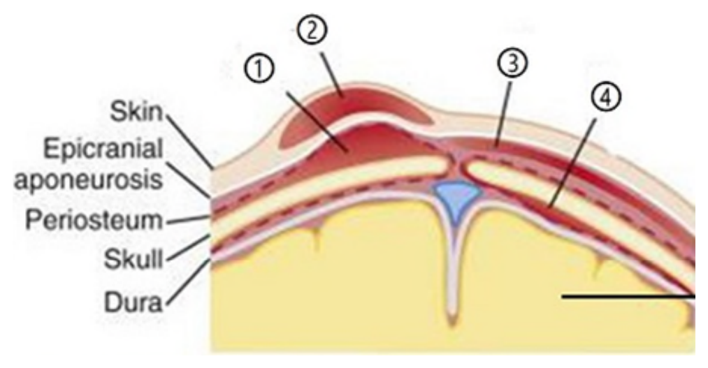
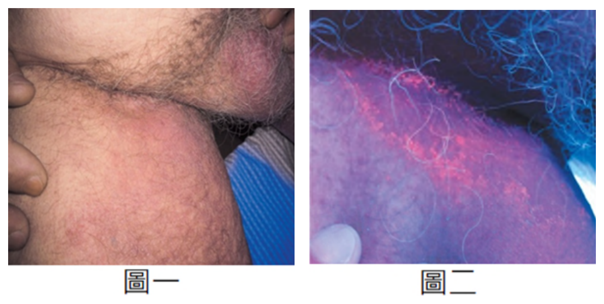
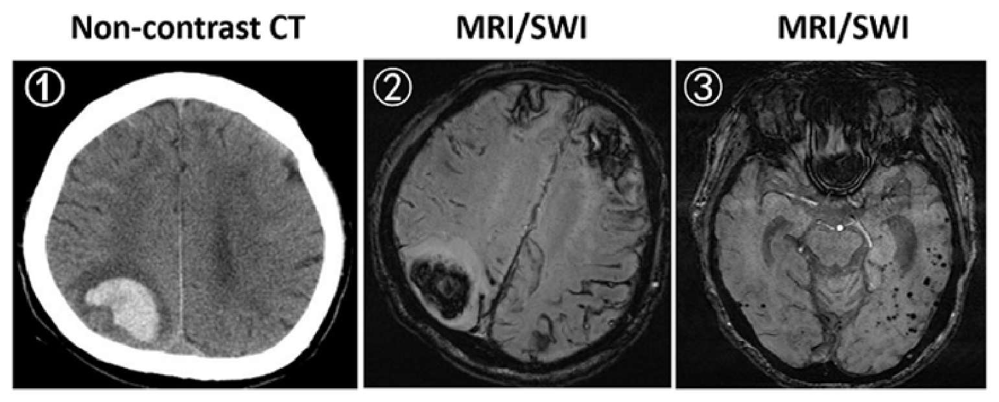
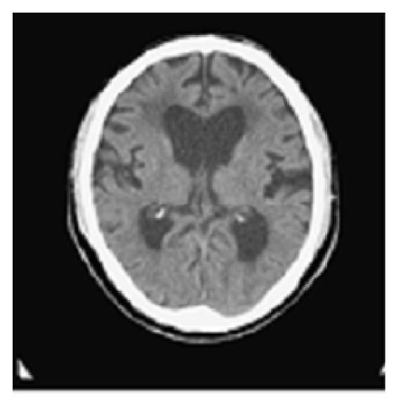
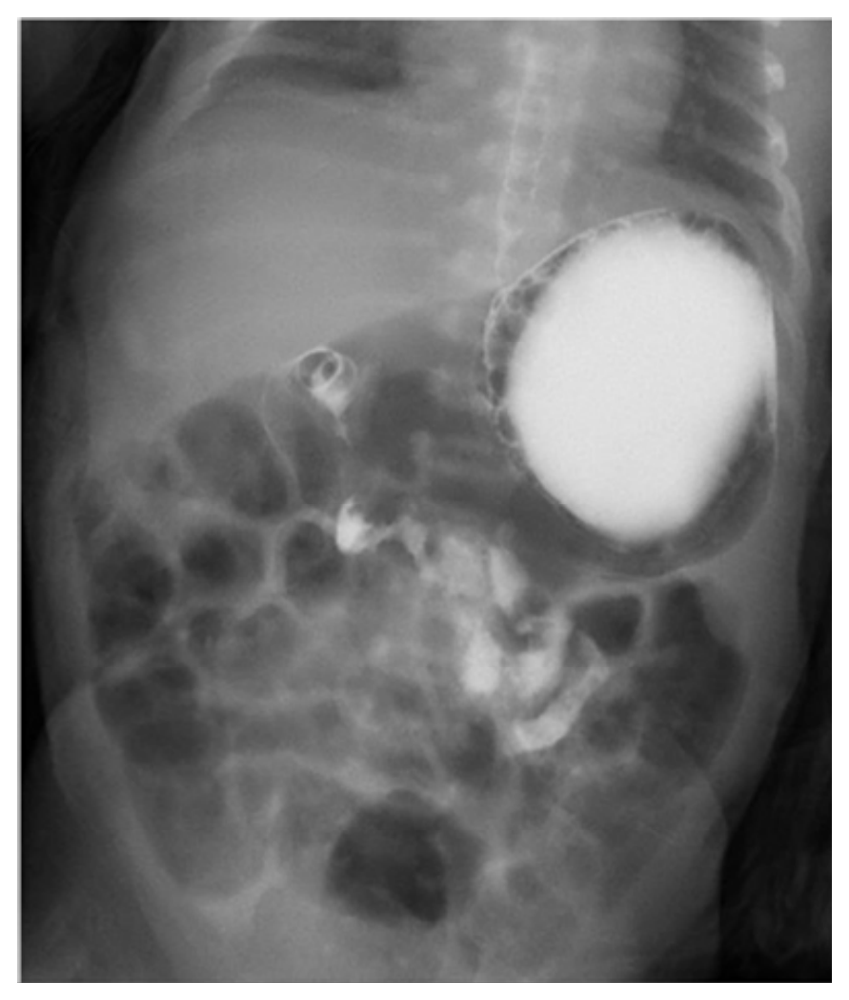
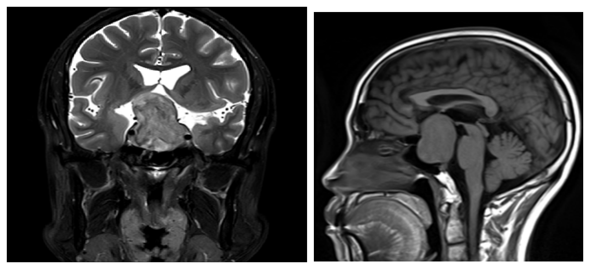

115 年醫師醫學（四）（包括小兒科、皮膚科、神經科、精神科等科目及其相關臨床實例與醫學倫理）試題與答案
這一頁是民國 115 年醫師醫學（四）（包括小兒科、皮膚科、神經科、精神科等科目及其相關臨床實例與醫學倫理）的整份歷屆試題，共 80 題，題目與標準答案出自考選部「國家考試試題及測驗式試題答案」開放資料，其中 80 題附有詳解。以下逐題列出題幹、選項與答案；要計時作答或記錄成績，請用線上練習。
考選部原始場次代碼：115020
線上作答這一科 →
全部 80 題
第 1 題
下列有關嬰兒安全睡眠環境安排的敘述，何者最為適當？
- （A）床欄杆要圍一圈軟墊或棉被防撞
- （B）嬰兒床擺在媽媽房間，但嬰兒需與媽媽不同床
- （C）給寶寶睡枕頭，以維持頭型
- （D）放一些填充玩偶陪伴，以增加安撫感
答案：（B）
詳解與考點
正解：嬰兒安全睡眠要同室但不同床。嬰兒床放在照顧者房間可利於觀察與餵養，同時讓嬰兒在獨立、平坦、堅實的睡眠表面仰睡，可避免成人床墊、棉被或成人身體造成窒息風險，故選 B。
A：床欄軟墊或鬆散棉被看似能防撞，卻可能遮住口鼻或造成夾困與窒息風險，不建議放入嬰兒睡眠空間。
C：枕頭會增加臉部被遮掩與窒息的風險，嬰兒不需靠枕頭維持頭型，故不適當。
D：填充玩偶雖有安撫用途，但屬鬆散物品，睡眠時可能阻塞呼吸道，不應放在嬰兒床內。
本題考點：安全睡眠（safe sleep）——嬰兒應睡在獨立、平坦且堅實的表面；同室不同床（room-sharing without bed-sharing）——兼顧照護便利與降低睡眠相關窒息風險。
第 2 題
有關卡介苗（Bacille Calmette-Guérin vaccine, BCG 疫苗）的接種，下列敘述何者最不適當？
- （A）卡介苗是以牛的分支桿菌（Mycobacterium bovis）製成之活性疫苗
- （B）目前我國政策建議出生滿 5～8 個月接受預防接種，但長住高發生率地區或即將前往結核病高盛行國家，可考慮提早接種
- （C）接種卡介苗主要是避免結核性腦膜炎或瀰漫性感染（disseminated and meningeal tuberculosis）等併發症
- （D）卡介苗接種後，約 4～6 個月皮膚結核菌素測試（tuberculin skin test），才會轉為陽性
答案：（D）
詳解與考點
正解：BCG 接種後皮膚結核菌素試驗的轉陽時程。接種後引發細胞性免疫反應通常在數週內就可能使 tuberculin skin test 陽性，不須等到 4～6 個月；D 的時間說法不適當，故選 D。此題涉及我國接種政策與時程，具時效性
A：卡介苗（Bacille Calmette-Guérin vaccine, BCG）源自減毒的牛分枝桿菌（Mycobacterium bovis），屬活性減毒疫苗，敘述正確。
B：題述的國內接種建議與高風險暴露情境的提早接種屬政策時程問題；依題目脈絡，此項不是最不適當者。
C：BCG 對預防兒童嚴重結核病型態，如結核性腦膜炎與瀰漫性結核，具有重要意義，故此項正確。
本題考點：卡介苗（Bacille Calmette-Guérin vaccine, BCG）——以減毒 Mycobacterium bovis 製成；結核菌素試驗（tuberculin skin test）——BCG 後可影響試驗解讀，且時程與接種政策須依現行建議確認。
第 3 題
足月新生兒因分娩延長，婦產科醫師以真空吸引協助娩出。出生後兩小時頭圍增加 1 公分，膚色蒼白，心跳每分鐘 190 次，血壓 42/20 mmHg。附圖為頭部剖面圖，最可能造成大量出血的位置為圖中何處？

- （A）圖中位置①
- （B）圖中位置②
- （C）圖中位置③
- （D）圖中位置④
答案：（C）
詳解與考點
正解：真空吸引後短時間頭圍持續增加，合併蒼白、心搏過速與低血壓，表示新生兒發生可造成失血性休克的大量頭皮下出血。圖中位置③位於帽狀腱膜（epicranial aponeurosis）與骨膜（periosteum）之間的帽狀腱膜下腔（subgaleal space），此處可因導出靜脈撕裂而形成瀰漫性帽狀腱膜下出血（subgaleal hemorrhage）。該腔隙範圍廣、可跨越顱縫並容納大量血液，最能解釋本題的快速頭圍增加與休克，故選 C。
A：圖中位置①的血液侷限於較表淺的頭皮組織，雖可造成局部腫脹，但可蓄積的血量遠少於帽狀腱膜下腔，通常不足以造成如此明顯的循環衰竭。
B：圖中位置②位於最表淺的頭皮層，對應產程壓迫造成的產瘤（caput succedaneum）位置。產瘤主要是皮下組織水腫，可跨越顱縫，但不是大量失血的病灶，無法解釋蒼白、心搏過速及低血壓。
D：圖中位置④位於顱骨深部、硬腦膜（dura）相關區域，並非真空吸引造成大量頭皮下失血的典型位置；本題的臨床表現應優先辨識帽狀腱膜下出血。
本題考點：帽狀腱膜下出血（subgaleal hemorrhage）位於帽狀腱膜與骨膜之間，可跨越顱縫且蓄血量大；真空吸引是重要危險因子；新生兒頭圍快速增加、蒼白、心搏過速與低血壓提示失血性休克（hemorrhagic shock）。
第 4 題
嬰兒使用呼吸器時，下列何種設定調整無法增加氧合（oxygenation）？
- （A）調高最高吸氣壓力（peak inspiratory pressure）
- （B）調高吐氣末端正壓（positive end-expiratory pressure）
- （C）調高氣流流量（gas flow）
- （D）調高吐氣時間（expiratory time）
答案：（D）
詳解與考點
正解：氧合主要取決於吸入氧濃度、平均氣道壓與肺泡招募。調高最高吸氣壓力或 PEEP 可提高平均氣道壓、改善肺泡開放；調整氣流流量可影響吸氣型態與吸氣時間。單純調高吐氣時間主要改變呼氣排空，無法直接增加氧合，故選 D。
A：調高最高吸氣壓力（peak inspiratory pressure）可在合適設定下增加潮氣量與平均氣道壓，可能改善肺泡通氣與氧合，故非答案。
B：調高吐氣末端正壓（positive end-expiratory pressure, PEEP）可減少肺泡塌陷並增加功能性殘氣量，是改善氧合的重要方式。
C：氣流流量（gas flow）會影響吸氣時間與壓力波形；在特定呼吸器模式下可間接影響平均氣道壓，因此不能視為絕對無法影響氧合。
本題考點：氧合（oxygenation）——主要與 FiO2、肺泡招募及平均氣道壓有關；吐氣末端正壓（positive end-expiratory pressure, PEEP）——維持肺泡開放以改善氧合。
第 5 題
依現行衛生福利部疾病管制署建議，媽媽為 B 型肝炎表面抗原（HBsAg）陽性之 B 型肝炎帶原者之新生兒，最遲需於出生後幾小時內注射 B 型肝炎免疫球蛋白（hepatitis B immunoglobulin, HBIG）？
- （A）24 小時
- （B）36 小時
- （C）48 小時
- （D）72 小時
答案：（A）
詳解與考點
正解：HBsAg 陽性母親所生新生兒的垂直感染預防時窗。HBIG 應儘早給予，最遲在出生後 24 小時內完成，並依預防程序接種 B 型肝炎疫苗；因此四個選項中選 A。此題的公衛建議具時效性，雖依題目所稱現行建議作答，仍須以當時主管機關公告為準
B：36 小時已超過題目所問的最遲時限，會延誤出生後暴露的被動免疫，故錯。
C：48 小時同樣超過建議時窗；它看似仍很接近出生後早期，但垂直感染預防強調的是出生後立即處置。
D：72 小時更晚於題目所列時限，不能作為最遲注射時間。
本題考點：B 型肝炎母嬰垂直感染預防（prevention of perinatal hepatitis B transmission）——HBsAg 陽性母親所生新生兒需及早接受 HBIG 與疫苗；被動免疫（passive immunization）——時效對出生時暴露後預防十分重要。
第 6 題
下列何種先天性心臟病或是心臟手術後，最不會被聽到連續性的心雜音（continuous murmur）？
- （A）接受 central shunt 人工分流管術後
- （B）冠狀動脈竇破裂到右心室（ruptured sinus of Valsalva aneurysm to right ventricle）
- （C）大型的主動脈到肺動脈側枝血管（major aortopulmonary collateral arteries, MAPCAs）
- （D）肺動脈－肺靜脈瘻管（pulmonary arteriovenous fistula）
本題送分，無標準答案
詳解與考點
本題官方公告送分。
第 7 題
在兒童先天性心臟病的自然病史（natural history），下列何種先天性心臟病最不會出現肺動脈高壓（pulmonary hypertension）的併發症？
- （A）心房中隔缺損（atrial septal defect）
- （B）開放性動脈導管（patent ductus arteriosus）
- （C）大血管轉位（dextro-loop transposition of the great arteries）
- （D）法洛氏四重症（tetralogy of Fallot）
答案：（D）
詳解與考點
正解：「最不會出現肺動脈高壓」。法洛氏四重症（tetralogy of Fallot）以右心室流出道阻塞造成肺血流減少為主，並非長期肺血流過多的左向右分流病變，因此最不易因肺血管床承受過多血流而形成肺動脈高壓，故選 D。
A：心房中隔缺損會形成左向右分流，長期肺血流增加可造成肺血管重塑與肺動脈高壓；雖然發生通常較晚，仍非「最不會」。
B：開放性動脈導管的主動脈至肺動脈左向右分流會增加肺血流；未治療的大分流可進展為肺動脈高壓。
C：大血管轉位的循環嚴重依賴混合與分流；若有足夠的室間或動脈導管層級分流，肺循環可承受高流量與高壓，並可能出現肺血管病變，故不如（D）符合。
本題考點：先天性心臟病自然病史（natural history of congenital heart disease）；左向右分流（left-to-right shunt）造成肺血流增加與肺動脈高壓；法洛氏四重症（tetralogy of Fallot）的肺血流減少。
第 8 題
若嬰幼兒時期對下列食物產生過敏，何種食物的過敏最不容易隨年紀增長而消失？
- （A）牛奶
- （B）黃豆
- （C）海鮮
- （D）蛋
答案：（C）
詳解與考點
正解：幼兒食物過敏隨年齡的自然緩解差異。牛奶、蛋與黃豆過敏常在兒童成長過程中獲得耐受；相較之下，海鮮過敏較常持續至較大年齡甚至成人，最不容易自行消失，故選 C。
A：牛奶蛋白過敏是嬰幼兒常見過敏原，但不少兒童日後能逐漸耐受；它看似常見而嚴重，卻不是最不易消失者。
B：黃豆過敏亦常在兒童期改善，持續性通常不如海鮮過敏。
D：蛋過敏可造成明顯症狀，但許多患童隨免疫耐受建立而緩解，故非最佳答案。
本題考點：食物過敏（food allergy）的自然病程；口服耐受（oral tolerance）；較容易持續的海鮮過敏（seafood allergy）。
第 9 題
下列何者不是 Langerhans cell histiocytosis 的特色？
- （A）CDla：positive
- （B）Birbeck granule：positive
- （C）hemophagocytic histiocyte：positive
- （D）eosinophilic granuloma
答案：（C）
詳解與考點
正解：辨認朗格漢斯細胞組織球增生症的細胞標記與形態。Langerhans cell histiocytosis 的病變細胞表現 CD1a，並可見 Birbeck granule；hemophagocytic histiocyte 是噬血症候群等巨噬細胞活化狀態的描述，不是本病的典型特色，故選 C。
A：CD1a 陽性是朗格漢斯細胞的代表性免疫表現型，符合本病。
B：Birbeck granule 是朗格漢斯細胞在超微結構檢查可見的桿狀或球拍狀胞質顆粒，符合本病。
D：eosinophilic granuloma 是骨部位局限型 Langerhans cell histiocytosis 的傳統名稱，故屬相關表現。
本題考點：朗格漢斯細胞組織球增生症（Langerhans cell histiocytosis）；CD1a；Birbeck granule；嗜酸性肉芽腫（eosinophilic granuloma）。
第 10 題
1 歲小朋友診斷細支氣管肺炎，下列何者是呼吸作功增加的現象？
- （A）頸部僵硬
- （B）鼻翼搧動
- （C）頭部轉動
- （D）呼吸暫停
答案：（B）
詳解與考點
正解：細支氣管肺炎時「呼吸作功增加」的可見徵象。鼻翼搧動代表嬰幼兒藉由擴張鼻孔降低吸氣阻力、努力維持通氣，是呼吸窘迫與呼吸作功增加的典型表現，故選 B。
A：頸部僵硬主要提示腦膜刺激徵象，並非呼吸作功增加的標誌。
C：頭部轉動不是小兒呼吸窘迫的標準觀察徵象；應注意的是點頭樣呼吸、胸凹與鼻翼搧動等。
D：呼吸暫停表示呼吸驅動或通氣中斷，並不是「努力呼吸」的表現，反而可能是惡化警訊。
本題考點：呼吸窘迫（respiratory distress）；呼吸作功（work of breathing）；鼻翼搧動（nasal flaring）。
第 11 題
15 歲男孩，身體診察發現右上肢血壓為 190/95 mmHg、背後兩肩胛骨間有收縮期雜音、右側橈（radial）動脈脈搏清楚，但兩側股動脈之脈搏摸不清楚。下列何種疾病應優先列入鑑別診斷？
- （A）主動脈弓縮窄（coarctation of aorta）
- （B）主動脈瓣狹窄（aortic stenosis）
- （C）上主動脈瓣狹窄（supravalvular aortic stenosis）
- （D）下主動脈瓣狹窄（subaortic stenosis）
答案：（A）
詳解與考點
正解：上肢嚴重高血壓、肩胛間收縮期雜音及股動脈脈搏弱或摸不到，指向主動脈狹窄處位於供應上肢血管之後，使下肢灌流降低；這是主動脈弓縮窄的典型脈搏與血壓差，故選 A。
B：主動脈瓣狹窄可造成收縮期雜音與左心室壓力負荷，但不能解釋上肢與下肢脈搏明顯不對稱。
C：上主動脈瓣狹窄發生於主動脈瓣上方，雖可有雜音，通常不會造成雙側股動脈消失的下肢低灌流型態。
D：下主動脈瓣狹窄是左心室流出道的瓣下阻塞，鑑別重點也在心臟雜音而非上下肢脈搏差。
本題考點：主動脈弓縮窄（coarctation of aorta）；上下肢血壓差（upper-lower extremity blood pressure gradient）；延遲或微弱股動脈脈搏（diminished femoral pulse）。
第 12 題
有關嬰兒腸絞痛診斷，下列何者最不適當？
- （A）發生在小於 5 個月的嬰兒
- （B）照顧者的主訴可以當診斷的依據
- （C）病人呈現生長遲滯現象
- （D）臨床診斷標準為嬰兒每天哭鬧時間大於 3 小時，一星期發生 3 天以上
答案：（C）
詳解與考點
正解：嬰兒腸絞痛應是健康、發育正常嬰兒的功能性診斷。生長遲滯不是單純腸絞痛可接受的表現，出現時應尋找餵養不足、胃腸疾病或其他器質性原因，因此最不適當的是 C。
A：嬰兒腸絞痛通常出現在出生後早期，並在約 5 個月前緩解，符合其年齡特徵。
B：照顧者對規律、難以安撫哭鬧的觀察是臨床評估的重要資料，搭配排除警訊後可作為診斷依據。
D：每天哭鬧超過 3 小時、每週超過 3 天是傳統「rule of threes」的描述，可作為臨床辨識架構。
本題考點：嬰兒腸絞痛（infantile colic）；功能性腸胃疾患（functional gastrointestinal disorder）；生長遲滯（failure to thrive）是需另行評估的警訊。
第 13 題
3 個月大的足月產男嬰，每天排便一次。今天因反覆嘔吐與腹脹，嘔吐物呈綠色，而至急診室求診。抽血檢驗結果 pH=7.15，PaCO2=28 mmHg，HCO3-=16.5 mmol/L，BE=-8.5 mmol/L，[Na+]=114 mEq/L，[K+]=5.1mEq/L，[Cl-]=68 mmol/L，BUN/creatinine=52/1.5 mg/dL；最有可能的診斷為何？
- （A）腸道旋轉不良（malrotation）併中腸扭結（midgut volvulus）
- （B）肥厚性幽門狹窄（hypertrophic pyloric stenosis）
- （C）先天腎上腺增生（congenital adrenal hyperplasia）
- （D）先天巨腸症（congenital aganglionic megacolon）
答案：（A）
詳解與考點
正解：綠色膽汁性嘔吐合併腹脹是腸阻塞、尤其腸扭結的急症線索。酸血症（pH 7.15、HCO3- 16.5 mmol/L）、低鈉低氯與腎前性氮血症也支持嚴重脫水及可能腸缺血；腸道旋轉不良併中腸扭結最能整合此表現，故選 A。
B：肥厚性幽門狹窄通常為非膽汁性、噴射性嘔吐，且因胃酸流失較常出現低氯代謝性鹼中毒，與本題綠色嘔吐及酸中毒相反。
C：先天腎上腺增生可有低鈉、高鉀與脫水，但不能以此解釋膽汁性嘔吐和腹脹；（A）的外科急腹症線索更直接。
D：先天巨腸症可造成腹脹與腸阻塞，但典型病史為出生後胎便排出延遲；急性膽汁性嘔吐時仍須優先排除中腸扭結。
本題考點：膽汁性嘔吐（bilious vomiting）；腸道旋轉不良（malrotation）；中腸扭結（midgut volvulus）；代謝性酸中毒（metabolic acidosis）。
第 14 題
關於急性胰臟炎（acute pancreatitis）的敘述，下列何者最不適當？
- （A）造成孩童急性胰臟炎的主因，包括外傷、感染及膽道或胰管結構異常
- （B）引起兒童急性胰臟炎最常見的藥物是 ibuprofen
- （C）嚴重急性胰臟炎身體診察時，肚臍周圍皮膚可能會有藍紫色瘀血出現（Cullen sign）
- （D）實驗室血液檢驗中，脂肪酶（lipase）的特異性（specificity）比澱粉酶（amylase）高
答案：（B）
詳解與考點
正解：兒童急性胰臟炎的常見病因與藥物誘因。外傷、感染及膽道或胰管結構異常確為兒童常見病因，但把 ibuprofen 指為最常見致病藥物並不恰當；兒童藥物相關胰臟炎須依用藥史判讀，不能以此作為通則，故選 B。
A：兒童急性胰臟炎的病因與成人不同，外傷、感染和解剖結構異常均是重要方向，敘述適當。
C：嚴重胰臟炎可能有臍周藍紫色瘀斑，即 Cullen sign，反映腹膜後或腹腔出血外滲，敘述適當。
D：lipase 對胰臟炎的特異性通常優於 amylase，故此敘述正確。
本題考點：兒童急性胰臟炎（acute pancreatitis）；Cullen sign；脂肪酶（lipase）與澱粉酶（amylase）的診斷價值。
第 15 題
3 歲幼兒（懷孕週數 31 週，出生體重 1450 公克），主訴身高及體重皆小於第 3 百分位，過往病史有反覆肌肉無力、痙攣及多尿。其血液檢查呈現低血鉀、低血氯、高腎素和高醛固酮濃度、高 pH 值與高碳酸根離子；尿液檢查為高尿鈣症。下列診斷何者最為可能？
- （A）腎小管酸血症（renal tubular acidosis）
- （B）慢性腹瀉（chronic diarrhea）
- （C）巴特氏症候群（Bartter syndrome）
- （D）吉特曼氏症候群（Gitelman syndrome）
答案：（C）
詳解與考點
正解：低血鉀、低血氯、代謝性鹼中毒、高腎素與高醛固酮顯示腎臟鹽分流失造成的繼發性高醛固酮狀態；再加上高尿鈣症，最符合 Bartter syndrome。其病理生理類似袢利尿劑作用於亨利氏袢粗上行支，故選 C。
A：腎小管酸血症的核心是腎臟酸化或碳酸氫根再吸收障礙，應呈代謝性酸中毒，與本題高 pH 及高碳酸根不符。
B：慢性腹瀉也可造成低鉀，但多為腸道流失碳酸氫根所致的代謝性酸中毒，且無法合理解釋高尿鈣。
D：吉特曼氏症候群也可低鉀代謝性鹼中毒，因而看似相近；但它典型為低尿鈣與低鎂血症，本題高尿鈣較支持（C）。
本題考點：巴特氏症候群（Bartter syndrome）；繼發性高醛固酮症（secondary hyperaldosteronism）；高尿鈣症（hypercalciuria）；代謝性鹼中毒（metabolic alkalosis）。
第 16 題
關於兒童慢性腎臟病（chronic kidney disease, CKD），下列敘述何者最不適當？
- （A）小於 5 歲的孩童，發生的主因為先天腎臟與尿路異常（congenital abnormalities of kidney and urinarytract）
- （B）身材矮小是兒童慢性腎臟病的重要表現，主因生長激素（growth hormone）與胰島素樣生長因子 1（insulin-like growth factor 1）缺乏導致
- （C）CKD 病童高血壓的首選藥為血管張力素轉化酶抑制劑（ACEI）或血管張力素受體阻斷劑（ARB）
- （D）鈣、磷電解質失調與 CKD 病童的血管鈣化有關
答案：（B）
詳解與考點
正解：兒童 CKD 身材矮小的機轉。CKD 的生長障礙並非單純生長激素與 IGF-1 缺乏；常見的是營養不良、代謝性酸中毒、腎性骨病，以及生長激素阻抗與 IGF 訊號受損，因此 B 的因果敘述最不適當。
A：幼兒 CKD 常由先天腎臟與尿路異常造成，符合兒童年齡層的常見病因分布。
C：CKD 合併高血壓且有蛋白尿等情境時，ACEI 或 ARB 有降低腎絲球內壓與腎臟保護作用，是重要治療選項。
D：CKD 的鈣、磷與副甲狀腺素調控失衡會促進血管鈣化，敘述適當。
本題考點：兒童慢性腎臟病（chronic kidney disease）；生長激素阻抗（growth hormone resistance）；慢性腎臟病礦物質與骨異常（CKD-mineral and bone disorder）。
第 17 題
關於夜尿（nocturnal enuresis），下列敘述何者最不適當？
- （A）依照臨床上的定義，「夜尿」是指大於 5 歲的小孩在睡眠期間膀胱發生不自主排尿
- （B）口服或鼻噴（nasal spray）抗利尿激素（ADH）的類似物如 desmopressin acetate，是夜尿的首選治療方式
- （C）兒童夜尿宜詳細病史詢問、理學檢查與實驗學檢查來排除器質性的疾病如糖尿病、尿崩症、慢性腎臟病
- （D）導致孩童夜尿的原因很多，包括生理、心理或遺傳等因素
答案：（B）
詳解與考點
正解：夜尿的初始處置。單症狀夜尿可先進行衛教、生活與排尿習慣調整，並可使用夜尿警報器；口服 desmopressin 可依夜間多尿或短期快速改善需求作第一線治療。B 將鼻噴劑也列入首選不適當，因鼻噴 desmopressin 的低鈉血症與痙攣風險較高，不宜用於夜尿；使用口服藥時亦須限水以降低水中毒與低鈉血症風險，故選 B。
A：夜尿是 5 歲以上兒童在睡眠中反覆不自主排尿的臨床問題，年齡描述適當。
C：評估夜尿應問病史、作理學檢查及依情況安排檢驗，以辨認糖尿病、尿崩症、腎臟病等器質性原因，敘述適當。
D：夜尿病因具多因素性，涉及夜間尿量、覺醒閾值、膀胱功能、遺傳與心理社會因素，敘述正確。
本題考點：夜尿（nocturnal enuresis）；夜尿警報器（enuresis alarm）；去氨加壓素（desmopressin）；單症狀夜尿（monosymptomatic enuresis）。
第 18 題
有關 A 群鏈球菌感染（group A streptococcus infection）的猩紅熱與川崎氏症（Kawasaki disease），下列敘述何者最不適當？
- （A）都會發燒、起疹子、草莓舌
- （B）都有可能於指尖脫皮（desquamation）
- （C）都好發於 5 歲以上病童
- （D）鏈球菌感染用抗生素治療；川崎氏症急性期用 intravenous immunoglobulin（IVIG）與 aspirin
答案：（C）
詳解與考點
正解：兩病的好發年齡。猩紅熱常見於學齡兒童，而川崎氏症主要發生於 5 歲以下；不能說兩者都好發於 5 歲以上，故最不適當的是 C。
A：猩紅熱與川崎氏症皆可能有發燒、皮疹及草莓舌，雖病因不同，臨床初期確可相似。
B：兩者皆可能於病程後出現指尖或趾端脫皮，故是容易混淆但正確的共同表現。
D：A 群鏈球菌感染以抗生素治療；川崎氏症急性期以 IVIG 合併 aspirin 降低冠狀動脈併發症風險，敘述適當。
本題考點：猩紅熱（scarlet fever）；川崎氏症（Kawasaki disease）；草莓舌（strawberry tongue）；末端脫屑（desquamation）。
第 19 題
關於氣喘運動誘發測驗，下列敘述何者最不適當？
- （A）持續有氧運動或跑步 6～8 分鐘
- （B）一般兒童運動後可以增加 FEV1（一秒內用力吐氣容積）5～10%
- （C）未經適當治療的氣喘兒童，在運動誘發測試後，其 FEV1 通常會下降＞15%
- （D）學齡兒童運動誘發氣喘，通常在 20 分鐘開始，於 30 分鐘後達到最嚴重狀況
答案：（D）
詳解與考點
正解：運動誘發支氣管收縮的時間軸。症狀與 FEV1 下降通常在運動結束後不久出現，約在運動後數分鐘達到高峰並多於約 1 小時內恢復；說學齡兒童到 20 分鐘才開始、30 分鐘後才最嚴重並不符合典型反應，故選 D。
A：以持續有氧運動或跑步進行數分鐘可作為運動誘發測驗的刺激方式，敘述可接受。
B：一般兒童運動後 FEV1 可有小幅增加，反映運動時支氣管擴張效應；此現象也使其與未控制氣喘的反應不同。
C：未適當治療的氣喘兒童可在運動後出現明顯 FEV1 下降，下降幅度可作為運動誘發支氣管收縮的客觀依據。
本題考點：運動誘發支氣管收縮（exercise-induced bronchoconstriction）；一秒內用力吐氣容積（FEV1）；運動後肺功能時間曲線。
第 20 題
下列何者不屬於大球性貧血（macrocytic anemia）？
- （A）硫胺素反應性貧血（thiamine responsive anemia）
- （B）鉛中毒（lead poisoning）
- （C）范可尼貧血（Fanconi anemia）
- （D）葉酸缺乏（folate deficiency）
答案：（B）
詳解與考點
正解：紅血球平均體積的分類。鉛中毒干擾血基質與血紅素合成，典型造成小球性、低色素性貧血，而非大球性貧血，故選 B。
A：硫胺素反應性貧血與細胞代謝異常相關，可表現為大球性或類巨幼紅血球性貧血，屬本題分類。
C：范可尼貧血是骨髓衰竭症候群，常先出現大球性紅血球變化，故可列入大球性貧血的鑑別。
D：葉酸缺乏使 DNA 合成受阻，造成巨幼紅血球性的大球性貧血，是經典病因。
本題考點：大球性貧血（macrocytic anemia）；巨幼紅血球性貧血（megaloblastic anemia）；鉛中毒（lead poisoning）的微小球性貧血。
第 21 題
關於兒童腫瘤可能造成的臨床徵象與實驗室檢查結果，下列敘述何者最不適當？
- （A）類卡波西血管內皮細胞瘤（Kaposiform hemangioendothelioma）：瘀血、紫斑、血小板下降、微小血管內溶血性貧血
- （B）松果體母細胞腫瘤（pineoblastoma）：尿崩（diabetes insipidus）、乳溢（galactorrhea）、甲狀腺機能亢進（hyperthyroidism）
- （C）威爾姆氏腫瘤（Wilms tumor）：血尿（hematuria）、腹腔腫塊（abdominal mass）、部分凝血活酶時間延長（elevated partial thromboplastin time）
- （D）嗜鉻細胞瘤（pheochromocytoma）：陣發性高血壓（paroxysmal hypertension）、蒼白（pallor）、冒冷汗（sweating）、高尿液游離後腎上腺髓素濃度（high urine metanephrine level）
答案：（B）
詳解與考點
正解：腫瘤位置應能解釋內分泌表現。尿崩、乳溢與甲狀腺機能亢進並非松果體母細胞腫瘤的典型成套表現；它們較提示下視丘、腦下垂體或相關內分泌軸受影響，故 B 最不適當。
A：類卡波西血管內皮細胞瘤可併 Kasabach-Merritt phenomenon，出現瘀血、紫斑、血小板低下與消耗性凝血病變，敘述合理。
C：威爾姆氏腫瘤可表現腹部腫塊與血尿；題目列出的凝血檢查異常可見於其相關止血異常評估，非本題最明顯的錯配。
D：嗜鉻細胞瘤的兒茶酚胺過多可造成陣發性高血壓、蒼白、出汗，尿中 metanephrine 升高亦符合。
本題考點：松果體母細胞腫瘤（pineoblastoma）；腫瘤定位（tumor localization）；Kasabach-Merritt phenomenon；嗜鉻細胞瘤（pheochromocytoma）。
第 22 題
足月出生體重 3.1 公斤之新生兒，剛出生時哭聲宏亮，Apgar score 於第一分鐘及第五分鐘為 8 分及 9 分。出生一小時後出現呼吸喘及發紺。聽診時發現其右邊呼吸音減弱，無腹部凹陷。下列何者為最可能的診斷？
- （A）右側自發性氣胸
- （B）發紺型先天性心臟病
- （C）左側橫膈膜疝氣
- （D）病毒性細支氣管炎
答案：（A）
詳解與考點
正解：出生後一小時突發呼吸喘、發紺且右側呼吸音減弱，最直接指向右側胸腔內空氣使肺塌陷的自發性氣胸。新生兒可在出生後早期出現此問題；沒有腹部凹陷也不支持橫膈膜疝氣，故選 A。
B：發紺型先天性心臟病可造成發紺，但通常不會單獨造成一側呼吸音明顯減弱。
C：左側橫膈膜疝氣會使腹腔臟器進入左胸、造成左側呼吸音減弱與腹部凹陷，和本題右側體徵不符。
D：病毒性細支氣管炎不會在健康足月新生兒出生一小時後突然造成單側呼吸音減弱，發病年齡與臨床型態皆不符。
本題考點：新生兒氣胸（neonatal pneumothorax）；單側呼吸音減弱（unilateral decreased breath sound）；橫膈膜疝氣（congenital diaphragmatic hernia）的鑑別。
第 23 題
下列何者不是兒童腸病毒重症發生的前兆？
- （A）呼吸急促
- （B）持續嘔吐
- （C）結膜出血
- （D）肌躍型抽搐（myoclonic jerk）
答案：（C）
詳解與考點
正解：腸病毒重症的神經與心肺警訊。肌躍型抽搐、持續嘔吐及呼吸急促可提示腦幹腦炎、自律神經失調或心肺衰竭風險；結膜出血不是典型重症前兆，故選 C。
A：呼吸急促可反映心肺功能受影響或代謝失衡，是須警覺的重症徵象。
B：持續嘔吐在腸病毒感染兒童可能伴隨中樞神經系統侵犯，屬需要密切觀察的警訊。
D：肌躍型抽搐是腸病毒 71 型等重症神經學警訊，尤其需注意是否合併嗜睡、肢體無力或自律神經不穩。
本題考點：腸病毒重症（severe enterovirus infection）；腦幹腦炎（brainstem encephalitis）；肌躍型抽搐（myoclonic jerk）；重症警訊（warning signs）。
第 24 題
下列何者不是目前臺灣健保給付生長激素治療的適應症？
- （A）腦瘤導致生長激素缺乏症（growth hormone deficiency）
- （B）羅素－西弗氏症（Russell-Silver syndrome）
- （C）普瑞德威利氏症候群（Prader-Willi syndrome）
- （D）透納氏症（Turner syndrome）
答案：（B）
詳解與考點
正解：題幹限定為「目前臺灣健保給付」的生長激素適應症。羅素－西弗氏症雖可有胎兒期與出生後生長遲滯，也可能在個別臨床情境討論生長治療，但不屬題目所列的臺灣健保給付適應症，故選 B。給付資格會隨規範調整，而題目未附現行條件，細節判定仍有不確定性。
A：腦瘤治療或腫瘤相關腦下垂體損害造成的生長激素缺乏症，可依缺乏症的評估納入治療適應症。
C：普瑞德威利氏症候群是生長激素治療的重要適應症之一，治療前仍須評估呼吸道與其他安全性問題。
D：透納氏症的身材矮小可使用生長激素治療，屬常見適應症。
本題考點：生長激素治療（growth hormone therapy）；羅素－西弗氏症（Russell-Silver syndrome）；普瑞德威利氏症候群（Prader-Willi syndrome）；透納氏症（Turner syndrome）。
第 25 題
13 歲男孩被診斷為嚴重糖尿病酮酸中毒（severe diabetic ketoacidosis）而住進加護病房，下列那一個實驗室檢查結果最可能在此病人身上表現？
- （A）血鈉（sodium）及血液滲透壓（osmolality）皆低於正常值
- （B）血清尿素氮（BUN）及肌酸酐（creatinine）皆低於正常值
- （C）血氧（O2）及總二氧化碳（total CO2）皆高於正常值
- （D）血液陰離子間隙（anion gap）高於正常值
答案：（D）
詳解與考點
正解：嚴重糖尿病酮酸中毒的核心是胰島素不足造成脂解與酮酸生成，產生未測得陰離子累積的高陰離子間隙代謝性酸中毒。陰離子間隙可由 Na+ −（Cl-＋HCO3-）估算；在酮酸增加、HCO3- 被消耗時數值上升，因此選 D。
A：DKA 常因高血糖造成水分由細胞內移出與滲透性利尿；測得血鈉可偏低，但有效血液滲透壓通常不是兩者皆低。
B：嚴重 DKA 伴隨脫水與腎灌流下降，BUN 與 creatinine 可上升而非都降低。
C：代謝性酸中毒會使 total CO2 降低；呼吸代償為 PaCO2 下降，不會是兩者皆高。
本題考點：糖尿病酮酸中毒（diabetic ketoacidosis）；高陰離子間隙代謝性酸中毒（high-anion-gap metabolic acidosis）；滲透性利尿（osmotic diuresis）。
第 26 題
8 歲男童高燒一星期求診，併有頭痛、腹痛和嘔吐的症狀。約在發燒 10 天前到山區掃墓。身體診察發現左側鼠蹊部淋巴結腫大、腹股溝發現約 1.5cm×1.0cm 的焦痂（eschar）。抽血報告顯示 Hb 13.6 g/dL，WBC13300/μL，platelet 275000/μL，GOT 212 U/L，GPT 359 U/L，CRP 7.535 mg/dL。最有可能的診斷為下列何者？
- （A）登革熱（dengue fever）
- （B）鉤端螺旋體病（leptospirosis）
- （C）恙蟲病（scrub typhus）
- （D）炭疽熱（anthrax）
答案：（C）
詳解與考點
正解：山區暴露後發燒、鼠蹊淋巴結腫大與腹股溝焦痂（eschar）是恙蟲病的關鍵組合。恙蟎幼蟲叮咬處可形成無痛性焦痂，Orientia tsutsugamushi 感染常伴發燒、頭痛、腸胃症狀、淋巴結腫大及肝功能指數上升，故選 C。
A：登革熱可發燒且有肝功能異常，但典型線索較為白血球下降、血小板下降與出血或血漿滲漏；本題的叮咬焦痂及局部引流淋巴結腫大更指向恙蟲病。
B：鉤端螺旋體病可在戶外或接觸受污染水土後發燒，也可有肝腎病變；但不以焦痂及其附近淋巴結腫大為特徵。
D：皮膚炭疽可形成黑色焦痂，因而看似可混淆；然而通常是局部丘疹、水疱進展的病灶，題幹的山區恙蟎暴露、全身症狀與轉胺酶上升較符合恙蟲病。
本題考點：恙蟲病（scrub typhus）由 Orientia tsutsugamushi 引起；焦痂（eschar）與區域淋巴結腫大是重要臨床辨識線索；立克次體感染（rickettsial infection）可造成發燒及肝功能異常。
第 27 題
12 歲男童，因發燒與咳嗽 4 天就診，診斷為非典型肺炎，並給與 azithromycin 10 mg/kg/day QD 3 天治療。治療後一天隨即退燒，兩次抽血檢驗 Mycoplasma pneumoniae 的 IgG 與 IgM 抗體均為陰性。下列何者是最可能的病原？
- （A）Streptococcus pneumoniae
- （B）Chlamydia trachomatis
- （C）Chlamydia pneumoniae
- （D）Mycoplasma hominis
答案：（C）
詳解與考點
正解：學齡兒童的非典型肺炎對 azithromycin 治療反應良好，但兩次 Mycoplasma pneumoniae 血清抗體皆陰性，應改想另一個對巨環類抗生素敏感的非典型病原。Chlamydia pneumoniae 是兒童與青少年常見的呼吸道非典型肺炎病原，故選 C。
A：Streptococcus pneumoniae 常造成典型細菌性肺炎，臨床上較常見突發高燒、化膿性痰或肺葉實變，不能由本題的「非典型肺炎」與陰性黴漿菌血清學得到最佳支持。
B：Chlamydia trachomatis 的肺炎主要見於周產期感染的嬰兒，而非 12 歲兒童。
D：Mycoplasma hominis 通常與泌尿生殖道或產科感染相關，並非社區型非典型肺炎的典型病原；容易因同屬 Mycoplasma 而誤選，但其臨床棲位不同。
本題考點：非典型肺炎（atypical pneumonia）在學齡兒童須考慮 Mycoplasma pneumoniae 與 Chlamydia pneumoniae；巨環類抗生素（macrolides）對此類無典型細胞壁病原具治療角色；血清學陰性可協助排除特定病原。
第 28 題
關於嬰兒玫瑰疹（roseola infantum）的敘述，下列何者最不適當？
- （A）引起玫瑰疹的病毒是 human herpesvirus 6（HHV-6）和 HHV-7
- （B）皮膚紅疹通常與發燒同時出現，多分布在軀幹，燒退後 2～3 天逐漸消失
- （C）亞洲病童常可在懸壅垂兩側發現稱之為永山斑（Nagayama spots）的潰瘍
- （D）可併發痙攣，但日後再發生癲癇的機率不會比一般人高
答案：（B）
詳解與考點
正解：本題問最不適當，關鍵在玫瑰疹的疹與燒時序。嬰兒玫瑰疹常先有數日高燒，退燒後才出現以軀幹為主的玫瑰色斑疹，並在短時間內消退；並非皮疹通常和發燒同時出現，故選 B。
A：human herpesvirus 6（HHV-6）是主要病原，HHV-7 亦可引起類似臨床表現，敘述適當。
C：永山斑（Nagayama spots）是可見於玫瑰疹的軟顎、懸壅垂周邊紅斑或丘疹性病灶，並非本題的錯誤敘述。
D：玫瑰疹高燒期可發生熱性痙攣，單純熱性痙攣整體預後良好；惟後續癲癇風險仍可略高於一般兒童，故 D「不會比一般人高」的用語並不嚴謹。B 的疹與燒時序錯誤最明確，故仍依官方答案選 B。
本題考點：嬰兒玫瑰疹（roseola infantum/exanthem subitum）多由 HHV-6 或 HHV-7 引起；退燒後出疹（rash after defervescence）是經典時序；高燒可誘發熱性痙攣（febrile seizure）。
第 29 題
關於自閉症類群障礙症（autism spectrum disorder）的描述，下列何者最適當？
- （A）自閉症的語言表達能力通常不會受到影響
- （B）自閉症目前已經有抽血的生物標記（biomarker）可以用來診斷
- （C）目前對於自閉症的核心症狀已有很有效的藥物治療
- （D）自閉症約有 50%病患有智能不足的問題
本題送分，無標準答案
詳解與考點
本題官方公告送分。
第 30 題
10 個月嬰兒因點頭性痙攣就診，身體診察皮膚有六處鯊魚皮斑（shagreen patch）及五小片褪色白斑（hypopigmented macules），額頭有血管纖維瘤（angiofibroma），心臟超音波發現一顆橫紋肌瘤（rhabdomyoma），下列何者為最可能的診斷？
- （A）Sturge-Weber 症候群
- （B）神經纖維瘤（neurofibromatosis）
- （C）結節性硬化症（tuberous sclerosis）
- （D）線狀皮脂腺痣症候群（linear nevus sebaceous syndrome）
答案：（C）
詳解與考點
正解：嬰兒點頭性痙攣合併褪色白斑、鯊魚皮斑、臉部血管纖維瘤與心臟橫紋肌瘤，集合了結節性硬化症的典型皮膚、神經及心臟表現。此病為神經皮膚症候群，嬰兒痙攣常是早期神經學線索，故選 C。
A：Sturge-Weber 症候群以葡萄酒色斑及同側軟腦膜血管瘤相關的癲癇為代表，無法解釋鯊魚皮斑與心臟橫紋肌瘤。
B：神經纖維瘤常見咖啡牛奶斑與神經纖維瘤，皮膚表現及相關腫瘤譜系均與本題不符。
D：線狀皮脂腺痣症候群可有線狀皮膚病灶和神經發展問題，但不會形成此組合的血管纖維瘤、鯊魚皮斑及心臟橫紋肌瘤。
本題考點：結節性硬化症（tuberous sclerosis complex）是神經皮膚症候群（neurocutaneous disorder）；皮膚可見 hypopigmented macules、angiofibromas、shagreen patch；心臟橫紋肌瘤（rhabdomyoma）與嬰兒痙攣（infantile spasms）均為重要線索。
第 31 題
有關熱性痙攣後續發展為癲癇的危險因子，下列何者機率最低？
- （A）單純性發作（simple type）
- （B）發燒不到 1 小時就發生熱性痙攣
- （C）有神經發展方面的障礙或缺陷
- （D）有癲癇的家族病史
答案：（A）
詳解與考點
正解：本題比較熱性痙攣後發展為癲癇的危險因子，單純型熱性痙攣的長期預後最佳。單純型指全身性、時間短、24 小時內不反覆的發作，若沒有神經發展異常或家族史，日後癲癇風險最低，故選 A。
B：發燒剛開始不久便發作，常被視為較高風險的臨床特徵之一，並非最低風險。
C：既有神經發展障礙或神經學缺陷，代表腦部本身的易感性較高，是日後癲癇的重要危險線索。
D：癲癇家族史提示遺傳易感性，會使後續癲癇風險上升，不能與單純型發作相比。
本題考點：熱性痙攣（febrile seizure）分為單純型與複雜型（complex type）；複雜特徵、神經發展異常與癲癇家族史和後續癲癇（epilepsy）風險較高相關。
第 32 題
8 歲女童，高燒 3 天合併喉嚨痛、無法進食、倦怠。身體診察發現雙眼皮浮腫、化膿性扁桃腺炎、脾臟腫大。下列敘述何者最適當？
- （A）身體診察可能會發現雙側頸部淋巴結腫大及肝腫大
- （B）會表現出嗜中性白血球（neutrophil）增多的現象，診斷標準檢驗為血液培養
- （C）需抗生素治療，但若使用青黴素類抗生素（如 ampicillin），可能會有紅疹現象
- （D）感染後常出現感染後腎小球腎炎
答案：（A）
詳解與考點
正解：高燒、咽喉炎、眼皮浮腫、脾臟腫大最符合傳染性單核球增多症，常見病原為 Epstein-Barr virus。此病可出現後頸淋巴結腫大、肝脾腫大，故選 A。
B：本病較典型的是淋巴球增多及非典型淋巴球，而不是嗜中性白血球增多；診斷不以血液培養為標準。
C：ampicillin 在 EBV 感染者可能引起廣泛皮疹，因而看似正確；但傳染性單核球增多症通常採支持性治療，並非「需抗生素治療」，整句錯在治療前提。
D：感染後腎小球腎炎較典型見於 A 群鏈球菌感染後，非 EBV 傳染性單核球增多症的常見後果。
本題考點：傳染性單核球增多症（infectious mononucleosis）常由 Epstein-Barr virus 引起；典型表現為發燒、咽炎、淋巴結腫大及肝脾腫大；ampicillin-associated rash 是常見誘答。
第 33 題
有關 Huntington disease（HD）與 fragile X syndrome 的比較，下列何者最不適當？
- （A）兩者親代的 premutation expansions 會導致子代 full mutations 的機率增加
- （B）premutation alleles 中重複序列的次數：HD 29～35 次；fragile X syndrome 55～200 次
- （C）重複序列：CAG in Huntington disease；CGG in fragile X syndrome
- （D）fragile X syndrome 的重複序列擴增來自父親
答案：（D）
詳解與考點
正解：本題問最不適當，關鍵是 fragile X syndrome 的 CGG 重複擴增呈母系傳遞時較容易由 premutation 擴增為 full mutation。父親傳遞給女兒的 X 染色體通常不會在生殖細胞形成過程擴增成 full mutation，因此（D）說擴增來自父親錯誤，故選 D。
A：兩病皆涉及不穩定重複序列，親代帶有較長的中間或 premutation 範圍等位基因時，下一代出現更長擴增的機會可增加，敘述可成立。
B：HD 的中間等位基因可落在 29～35 次 CAG 重複，fragile X 的 premutation 為 55～200 次 CGG 重複，敘述適當。
C：Huntington disease 的重複序列為 CAG，fragile X syndrome 為 CGG，是兩者最基本的分子鑑別。
本題考點：三核苷酸重複擴增（trinucleotide repeat expansion）可造成遺傳早現（anticipation）；Huntington disease 為 CAG repeat；fragile X syndrome 為 FMR1 CGG repeat，full mutation 的擴增以母系傳遞為要點。
第 34 題
26 歲的女性患者罹患中重度乾癬（病灶占全身體表面積 30%）且合併有乾癬性關節炎，對於此患者的治療計畫，下列何者錯誤？
- （A）建議施打 IL-17A 抑制劑，可同時治療皮膚和關節炎症狀
- （B）照光治療建議使用在病灶體表面積小於 10%的患者，所以不是治療選擇
- （C）患者有懷孕計畫，口服藥物包括 acitretin、methotrexate 都有致畸胎性（teratogenic），需要避免使用
- （D）相較於 IL-17A 抑制劑，IL-23 抑制劑較不會產生發炎性腸道疾病（inflammatory bowel disease）的副作用
答案：（B）
詳解與考點
正解：本題問錯誤治療規畫。中重度乾癬的治療不能只用病灶體表面積是否小於 10% 來排除照光；窄頻 UVB 等光照治療可作為中重度廣泛皮膚乾癬的全身性治療選項，實際選擇尚須綜合關節炎、病灶範圍與可近性，因此（B）的限制說法錯誤，故選 B。
A：IL-17A 抑制劑可同時改善斑塊型乾癬皮膚症狀與乾癬性關節炎，是合理選項。
C：acitretin 與 methotrexate 均有胚胎風險，計畫懷孕者應避免或依專科指示停用，敘述適當。
D：IL-17 路徑抑制劑和發炎性腸道疾病的關係須審慎評估；相較之下，IL-23 抑制劑通常較適合作為合併或擔憂發炎性腸道疾病時的生物製劑選項，敘述方向適當。
本題考點：中重度乾癬（moderate-to-severe psoriasis）治療可包括光照治療（phototherapy）與生物製劑；乾癬性關節炎（psoriatic arthritis）需同時評估關節控制；生育規畫須考量藥物致畸性（teratogenicity）。
第 35 題
關於接觸性皮膚炎（contact dermatitis）的敘述，何者錯誤？
- （A）雙手反覆碰水若引起刺激性接觸性皮膚炎（irritant contact dermatitis），其病灶通常會在雙手都出現
- （B）橡膠手套若引起過敏性接觸性皮膚炎（allergic contact dermatitis），其病灶不一定會在雙手都出現
- （C）染髮劑中的 para-phenylenediamine（PPD）若引起過敏性接觸性皮膚炎（allergic contactdermatitis），其病灶只會發生於頭皮，不會發生於額頭或頸部
- （D）貼膚測試（patch test）有助於診斷過敏性接觸性皮膚炎（allergic contact dermatitis）
答案：（C）
詳解與考點
正解：本題問錯誤敘述，關鍵是過敏性接觸性皮膚炎可在直接接觸處以外出現。PPD 染髮劑造成的反應常見於髮際、額頭、耳後、眼瞼或頸部，因染劑流布、接觸及免疫反應可影響這些區域；（C）限定只會在頭皮發生錯誤，故選 C。
A：反覆碰水造成的刺激性接觸性皮膚炎，屬累積性屏障傷害；若兩手都有相同暴露，常呈雙側分布，敘述適當。
B：橡膠手套的過敏反應取決於接觸位置與程度，可不對稱，不必然雙手都出現，敘述適當。
D：貼膚測試（patch test）是找出延遲型過敏性接觸性皮膚炎致敏原的重要工具，敘述正確。
本題考點：過敏性接觸性皮膚炎（allergic contact dermatitis）為延遲型過敏反應；para-phenylenediamine（PPD）是染髮產品常見致敏原；貼膚測試（patch test）可協助確認過敏原。
第 36 題
關於扁平苔癬（lichen planus）的敘述，下列何者錯誤？
- （A）病灶為紅紫色、多角型的扁平丘疹或斑塊
- （B）病灶常伴隨膿疱
- （C）好發部位包括口腔黏膜
- （D）可用外用皮質類固醇治療
答案：（B）
詳解與考點
正解：本題問錯誤敘述。扁平苔癬的經典病灶是發癢的紫紅色、多角形、扁平丘疹或斑塊，口腔黏膜也常受累；膿疱並非其典型原發性病灶，故選 B。
A：紫紅色、多角形、扁平的丘疹或斑塊是扁平苔癬的典型形態，敘述正確。
C：口腔黏膜是常見受累部位，可見網狀白紋、糜爛或疼痛病灶，敘述正確。
D：外用皮質類固醇可用於局部皮膚或口腔病灶的抗發炎治療，敘述適當。
本題考點：扁平苔癬（lichen planus）的典型「6 P」病灶包括 pruritic、purple、polygonal、planar papules；口腔扁平苔癬（oral lichen planus）常見；外用皮質類固醇（topical corticosteroids）是常用治療。
第 37 題
下列關於頭癬（tinea capitis）的敘述，何者錯誤？
- （A）不注意個人衛生是可能的危險因子之一
- （B）若是懷疑頭癬感染，可以考慮伍氏燈（Wood lamp）、KOH 檢查、黴菌培養或切片檢查，以幫助診斷
- （C）若是在伍氏燈（Wood lamp）下看到頭髮上有黃綠色螢光，則可確定是髮癬菌屬（Trichophyton species）的感染
- （D）在確定診斷後，口服抗黴菌藥是治療首選
答案：（C）
詳解與考點
正解：本題問錯誤敘述，關鍵在伍氏燈的螢光並不能指向所有髮癬菌屬。頭髮黃綠色螢光較支持某些 Microsporum 菌種感染；多數 Trichophyton 感染在 Wood lamp 下不發螢光，因此（C）把黃綠色螢光確定為 Trichophyton 感染錯誤，故選 C。
A：衛生不佳、密切接觸、共用梳具或與受感染人或動物接觸，都可能增加頭癬傳播風險，敘述可成立。
B：KOH 檢查與黴菌培養可協助診斷，伍氏燈可作為特定菌種的輔助檢查；病理切片亦可在疑難病例提供證據，敘述適當。
D：頭癬感染毛囊與毛幹，單用局部藥物難以根除，因此確診後通常以口服抗黴菌藥為治療主軸，敘述正確。
本題考點：頭癬（tinea capitis）是毛髮皮癬菌感染；伍氏燈（Wood lamp）可見部分 Microsporum 的螢光但不能證實 Trichophyton；口服抗黴菌治療（systemic antifungal therapy）是治療核心。
第 38 題
55 歲男性因胯下出現搔癢的紅疹來就診，病人提到工作時常流汗，其病灶如圖一所示。伍氏燈（Woodlamp）的檢查結果如圖二所示。最可能的診斷為何？

- （A）紅癬（erythrasma）
- （B）股癬（tinea cruris）
- （C）對磨疹（intertrigo）
- （D）念珠球菌感染（candidiasis）
答案：（A）
詳解與考點
正解：病灶位於腹股溝皺摺處，呈棕紅色斑疹；圖二伍氏燈下可見病灶呈珊瑚紅色螢光，這是紅癬（erythrasma）的典型所見。紅癬由 Corynebacterium minutissimum 感染所致，細菌產生的卟啉（porphyrins）在伍氏燈下發出珊瑚紅色螢光，故選 A。
B：股癬（tinea cruris）是皮癬菌感染，常見邊緣較活躍、鱗屑較明顯且可呈環狀向外擴展的斑疹；伍氏燈下並非本圖所見的珊瑚紅色螢光，因此雖同樣好發於潮濕腹股溝，仍不符。
C：對磨疹（intertrigo）是皮膚皺摺因潮濕、摩擦與浸潤造成的發炎，通常表現為對稱性紅斑與糜爛；它本身不會在伍氏燈下出現珊瑚紅色螢光，故非本題診斷。
D：念珠菌感染（candidiasis）在皺摺處可造成鮮紅、潮濕的糜爛性斑塊，常伴周邊衛星丘疹或衛星膿疱；其形態及伍氏燈表現均不符合圖中的棕紅色斑疹與珊瑚紅色螢光。
本題考點：紅癬（erythrasma）是 Corynebacterium minutissimum 所致的表淺細菌感染，好發於潮濕皮膚皺摺；伍氏燈（Wood lamp）下的珊瑚紅色螢光來自細菌產生的卟啉（porphyrins），可與股癬及念珠菌感染鑑別。
第 39 題
關於基底細胞癌（basal cell carcinoma），下列敘述何者錯誤？
- （A）為最常見的皮膚惡性腫瘤
- （B）手術切除為治療選擇之一
- （C）轉移機率甚高，常需配合化學治療
- （D）可能與日光曝曬有關
答案：（C）
詳解與考點
正解：本題問錯誤敘述。基底細胞癌雖是最常見的皮膚惡性腫瘤，但通常局部生長緩慢、以局部破壞為主，遠端轉移非常罕見；因此說「轉移機率甚高，常需配合化學治療」錯誤，故選 C。
A：基底細胞癌是最常見的皮膚惡性腫瘤，敘述正確。
B：手術切除是多數局限性基底細胞癌的重要治療方式之一，敘述正確。
D：累積日光曝曬與紫外線造成的 DNA 損傷是基底細胞癌的重要危險因子，敘述正確。
本題考點：基底細胞癌（basal cell carcinoma）常與紫外線曝露（ultraviolet exposure）相關；其特性是局部侵襲多於轉移；局部治療（local treatment）如手術切除是主要治療。
第 40 題
有關皮膚黑色素細胞癌（cutaneous melanoma）的危險因子，下列何者最正確？
- （A）持續少量日曬的人
- （B）深色皮膚的人
- （C）天生紅髮或金髮的人
- （D）易曬黑不易曬傷的人
答案：（C）
詳解與考點
正解：黑色素細胞癌的重要宿主危險因子是皮膚對紫外線防護較弱、容易曬傷的表型。天生紅髮或金髮通常代表較淺膚色與較低的保護性黑色素，和較高黑色素細胞癌風險相關，故選 C。
A：持續少量日曬雖仍有紫外線傷害，但黑色素細胞癌特別與間歇性強烈日曬及曬傷史相關；本選項不是最正確的典型危險因子。
B：深色皮膚含較多黑色素，對紫外線具有較高保護性，整體黑色素細胞癌風險較低。
D：易曬黑不易曬傷代表皮膚對紫外線的保護相對較佳，與易曬傷的高危險表型相反。
本題考點：皮膚黑色素細胞癌（cutaneous melanoma）與紫外線曝露（ultraviolet exposure）及曬傷史相關；淺色皮膚、紅髮或金髮等低色素表型（low-pigment phenotype）是重要危險因子。
第 41 題
關於化膿性汗腺炎（hidradenitis suppurativa），下列敘述何者正確？
- （A）體重過輕是惡化因子之一
- （B）臨床上好發於頭頸部，不易發生於腋下與胯下
- （C）疾病的最初起因是來自於大汗腺的細菌感染
- （D）anti-TNF-α（adalimumab）單株抗體是核准的治療方式之一
答案：（D）
詳解與考點
正解：化膿性汗腺炎是慢性、復發性毛囊阻塞發炎疾病，中重度病人可使用 anti-TNF-α 單株抗體 adalimumab，為核准的系統性治療選項之一，故選 D。
A：肥胖而非體重過輕與疾病惡化相關，減重及戒菸是重要的生活型態介入。
B：病灶好發於腋下、腹股溝、乳房下等皮膚摩擦的間擦部位，並非以頭頸部為主。
C：疾病起始機轉是毛囊阻塞、破裂及後續發炎，不是大汗腺的原發性細菌感染；細菌可參與繼發感染，卻不是疾病起點。
本題考點：化膿性汗腺炎（hidradenitis suppurativa）是毛囊阻塞性疾病（follicular occlusion disease）；危險或惡化因子包括肥胖與吸菸；adalimumab 為 anti-TNF-α 生物製劑（biologic therapy）。
第 42 題
下列有關男樣多毛症（hirsutism）之敘述，何者錯誤？
- （A）亦稱為毛髮增多症（hypertrichosis）
- （B）上唇為常見的位置
- （C）檢測血液可能有雄性素升高的現象
- （D）若男樣多毛症的症狀在短時間內出現，應考慮腎上腺或卵巢腫瘤
答案：（A）
詳解與考點
正解：本題問錯誤敘述。男樣多毛症是女性在雄性素依賴部位出現男性型終毛生長，反映雄性素作用；毛髮增多症則是非雄性素依賴、可全身性增加的毛髮生長，兩者不是同義詞，因此（A）錯誤，故選 A。
B：上唇是男樣多毛症常見的雄性素依賴部位之一，敘述正確。
C：患者可有血中雄性素升高，但也可能在血中濃度正常下因毛囊敏感度增加而發生，故「可能」升高的敘述正確。
D：短時間迅速出現或快速惡化的男樣多毛症須警覺雄性素分泌腎上腺或卵巢腫瘤，敘述正確。
本題考點：男樣多毛症（hirsutism）反映雄性素作用於終毛；毛髮增多症（hypertrichosis）不等同於 hirsutism；快速進展時須評估雄性素分泌腫瘤（androgen-secreting tumor）。
第 43 題
25 歲男性，青春期後開始在雙側腋下及胯下出現搔癢刺痛之紅色斑塊，並伴隨皮膚糜爛（erosiveerythematous plaques），尤其在夏天時特別嚴重。經詢問後發現其父親及祖父亦有類似症狀。其最有可能為下列何種疾病？
- （A）Darier disease
- （B）Galli-Galli disease
- （C）Hailey-Hailey disease
- （D）beriberi disease
答案：（C）
詳解與考點
正解：青春期後反覆發作於雙側腋下、腹股溝等間擦區的紅斑、糜爛與刺痛，且夏季、摩擦時加重，又有父親與祖父相似病史，符合常染色體顯性遺傳的 Hailey-Hailey disease。其特徵是反覆性良性家族性天疱瘡樣皮膚病，故選 C。
A：Darier disease 也可為常染色體顯性遺傳，但較典型是脂漏部位的粗糙角化性丘疹與甲變化，不是本題的屈側糜爛型表現。
B：Galli-Galli disease 為 Dowling-Degos disease 的棘層鬆解型變異，可因常染色體顯性遺傳、屈側發作與糜爛而看似符合；但通常伴屈側網狀色素沉著或色素性丘疹，與 Hailey-Hailey disease 以間擦部位反覆浸潤、糜爛為核心的典型表現不同。
D：beriberi disease 是維生素 B1 缺乏造成的疾病，不能解釋家族性、間擦部位反覆糜爛的皮膚表現。
本題考點：Hailey-Hailey disease（benign familial pemphigus）為遺傳性棘層鬆解（acantholysis）疾病；間擦部位糜爛（intertriginous erosions）與熱、汗、摩擦加劇是重要線索；常呈常染色體顯性遺傳（autosomal dominant inheritance）。
第 44 題
關於急性缺血性腦中風之血栓溶解治療，下列敘述何者錯誤？
- （A）常規治療為經動脈內施打組織胞漿素原活化劑（tissue plasminogen activator, t-PA），以減少藥物劑量並降低出血機率
- （B）靜脈血栓溶解治療可增加預後較佳之病人比例，但顱內出血的比例也會顯著上升
- （C）由於組織胞漿素原活化劑（tissue plasminogen activator, t-PA）的半衰期較短，因此 t-PA 治療需在部分藥物快速輸注（bolus）後，於 60 分鐘內將剩餘劑量進行連續性輸注
- （D）所有腦中風病人在接受血栓溶解治療前，皆應該進行腦部影像學檢查（如電腦斷層或磁振造影）
答案：（A）
詳解與考點
正解：本題問錯誤敘述。急性缺血性腦中風的常規血栓溶解是符合條件者接受靜脈 t-PA，而非經動脈內施打；動脈內治療屬特定血管阻塞情境的再灌流策略，不能取代常規靜脈溶栓，因此（A）錯誤，故選 A。
B：靜脈血栓溶解可增加良好功能預後者比例，但確有症狀性顱內出血風險增加的代價，敘述正確。
C：t-PA 靜脈給藥採部分劑量快速輸注後，將剩餘劑量在 60 分鐘內連續輸注的方式，敘述正確。
D：血栓溶解前必須先做腦部影像，以排除顱內出血等不適合溶栓的情況；時間緊迫卻不能省略這項安全步驟。
本題考點：急性缺血性腦中風（acute ischemic stroke）的再灌流治療（reperfusion therapy）以適格者的靜脈血栓溶解（intravenous thrombolysis）為核心；t-PA（tissue plasminogen activator）有出血風險；治療前腦部影像（brain imaging）不可省略。
第 45 題
82 歲女性病人突然發生右側枕葉頭痛合併左側視野缺損，無顯影劑之腦部電腦斷層（non-contrast CT）檢查結果如下圖①，磁振造影之磁敏感加權成像（susceptibility weighted imaging, SWI）結果如下圖②③。下列何者最有可能是此病人的診斷？

- （A）腫瘤併發腦轉移及腦出血
- （B）腦部隱球菌（cryptococcus）感染合併腦出血
- （C）大腦類澱粉血管病變（cerebral amyloid angiopathy）合併腦出血
- （D）原發性中樞神經系統血管炎（primary angiitis of central nervous system）合併腦出血
答案：（C）
詳解與考點
正解：圖①可見右側枕葉皮質下的急性腦內出血；圖②的 SWI 顯示該葉性出血周圍有磁敏感低訊號，圖③則可見雙側腦葉皮質－皮質下分布的多發、點狀低訊號微出血，且以後方腦葉明顯。高齡病人出現葉性出血合併嚴格腦葉型微出血，最符合大腦類澱粉血管病變（cerebral amyloid angiopathy, CAA）造成的腦出血，故選 C。
A：腫瘤出血可呈不規則腫塊、周邊水腫或多發轉移病灶，但無法以圖③廣泛、皮質－皮質下腦葉型微出血的分布來解釋；後者更具 CAA 的影像特徵。
B：腦部隱球菌感染較常見腦膜炎、腦實質隱球菌瘤或血管周圍腔隙相關病灶，並非高齡者多發嚴格腦葉型微出血與葉性出血的典型組合。
D：原發性中樞神經系統血管炎可造成多發缺血或出血病灶，但影像通常不會呈現圖③這種以腦葉皮質－皮質下為主、符合類澱粉血管沉積血管脆弱性的微出血分布。
本題考點：大腦類澱粉血管病變（cerebral amyloid angiopathy, CAA）是類澱粉蛋白沉積於皮質與軟腦膜小血管所致；其典型影像為高齡者的葉性腦內出血與 SWI/T2* 上嚴格腦葉型腦微出血（cerebral microbleeds）；應與深部微出血較常見的高血壓性小血管病變區分。
第 46 題
反覆發生右眼暫時性黑矇症（transient monocular blindness, amaurosis fugax），下列何者是最有可能的病因？
- （A）右側內頸動脈狹窄（internal carotid artery stenosis）
- （B）右側鎖骨下動脈狹窄（subclavian artery stenosis）
- （C）右側中大腦動脈狹窄（middle cerebral artery stenosis）
- （D）心房顫動造成心因性血栓（cardiac emboli）
答案：（A）
詳解與考點
正解：反覆單眼暫時性黑矇是視網膜短暫缺血的表現，最常見的血管來源是同側內頸動脈粥樣硬化狹窄，栓子或低灌流可經眼動脈循環影響同側眼睛，故選 A。
B：鎖骨下動脈狹窄較可能造成上肢缺血或鎖骨下竊血相關的椎基底循環症狀，無法最典型地解釋單眼視力暫失。
C：中大腦動脈供應大腦半球而不直接供應視網膜，狹窄較會造成對側運動、感覺或皮質症狀。
D：心房顫動可造成心因性栓塞，也可能導致腦缺血；但反覆、單側的 amaurosis fugax 在定位上最先應懷疑同側頸動脈病變。
本題考點：暫時性黑矇症（amaurosis fugax）是短暫單眼視網膜缺血；內頸動脈狹窄（internal carotid artery stenosis）是重要可治療病因；短暫性腦缺血發作（transient ischemic attack）須進行血管危險因子評估。
第 47 題
37 歲的男性因全身痙攣路倒被救護車送到急診，據路人描述從開始發作到進入急診大約 15 分鐘。標準急救流程已經建立完成，下列有關癲癇之敘述，何者錯誤？
- （A）痙攣須持續超過 30 分鐘，才可以診斷為重積癲癇（status epilepticus）
- （B）立即給與 lorazepam 靜脈注射，若癲癇未停止，5 分鐘後可以再重複一次
- （C）開始給與 phenytoin、valproic acid 或 levetiracetam 靜脈注射
- （D）若給與靜脈注射之抗癲癇藥物後仍未停止發作，需進行插管，開始給與 propofol、midazolam 或phenobarbital 靜脈注射
答案：（A）
詳解與考點
正解：本題問錯誤敘述，且病人已持續全身痙攣約 15 分鐘，應以痙攣性重積癲癇處置。現行臨床上持續性全身痙攣達 5 分鐘即應視為重積癲癇並立即治療，不必等待超過 30 分鐘，因此（A）錯誤，故選 A。
B：第一線可立即給予 lorazepam 靜脈注射；若發作未終止，可在短時間後再給一次，敘述符合初始處置原則。
C：若 benzodiazepine 後仍持續發作，應儘速給予 phenytoin、valproic acid 或 levetiracetam 等第二線靜脈抗癲癇藥，敘述正確。
D：在足量第一、二線藥物後仍持續發作屬難治性重積癲癇，需保護氣道、插管及麻醉性靜脈藥物控制，敘述正確。
本題考點：痙攣性重積癲癇（convulsive status epilepticus）以持續 5 分鐘作為立即治療門檻；benzodiazepine 為第一線；難治性重積癲癇（refractory status epilepticus）須進行氣道管理與麻醉性抗癲癇治療。
第 48 題
下列何者不屬於國際頭痛學會偏頭痛的診斷標準？
- （A）畏光且怕吵
- （B）搏動性
- （C）噁心或嘔吐
- （D）味覺異常
答案：（D）
詳解與考點
正解：「不屬於」偏頭痛診斷標準；典型偏頭痛發作除頭痛特徵外，相關症狀可有噁心、嘔吐，或畏光與怕吵。味覺異常不是國際頭痛學會偏頭痛診斷準則所列的必要伴隨症狀，故選 D。
A：畏光且怕吵是偏頭痛常見的感覺敏感症狀；診斷準則以畏光與怕吵作為伴隨症狀的組合之一，敘述符合。
B：搏動性是偏頭痛頭痛特徵之一，另會合併中重度疼痛、單側性或日常活動使疼痛加劇等表現，故不是答案。
C：噁心或嘔吐是偏頭痛診斷可採的伴隨症狀；它看似只是非特異性的腸胃症狀，卻正是用來支持偏頭痛的重要臨床線索。
本題考點：偏頭痛診斷（migraine diagnosis）——頭痛常具單側、搏動性、中重度、活動加劇等特徵，並伴隨噁心／嘔吐或畏光與怕吵；先兆症狀（aura）可多樣，但味覺異常不是核心診斷伴隨症狀。
第 49 題
21 歲女性，自 4 年前開始有白日嗜睡的困擾。她生活作息正常，但是 6 個月前和同學開玩笑的時候開始出現眼瞼和頭部下垂，以及雙膝癱軟的情形，有時因此摔倒，發作時意識正常。晚上睡覺常出現全身不能動彈，感覺有黑影壓在身上，令她非常害怕。下列何者是最可能的致病機轉？
- （A）腦部異常放電（癲癇樣波）
- （B）下視丘泌素（hypocretin）缺乏
- （C）神經肌肉交接傳遞異常
- （D）血鉀過低
答案：（B）
詳解與考點
正解：白日嗜睡合併情緒誘發、意識清楚的猝倒（cataplexy），再加上睡眠癱瘓，是嗜睡症第一型（narcolepsy type 1）的典型組合。其主要病理機轉是下視丘分泌素 hypocretin（orexin）神經元減少，睡眠與覺醒調控失衡，故選 B。
A：癲癇的異常放電可造成短暫意識或行為改變，但無法完整解釋長期白日嗜睡、笑時猝倒與睡眠癱瘓的組合；猝倒發作時意識保持清楚尤其不支持癲癇。
C：神經肌肉交接異常會想到重症肌無力，但其無力常隨使用加重、休息改善，並不以情緒觸發的短暫全身失張力及睡眠現象為特徵。
D：低血鉀可引起肌無力或週期性麻痺，卻不能解釋白日嗜睡、睡眠癱瘓及笑時發作；看似能造成雙膝癱軟，但誘發情境和意識狀態不相符。
本題考點：嗜睡症第一型（narcolepsy type 1）——下視丘分泌素缺乏造成白日過度嗜睡、猝倒（cataplexy）、睡眠癱瘓與入睡前後幻覺；猝倒時意識通常清楚。
第 50 題
患有意想運動性失用症（ideomotor apraxia）的病人，可執行下列何種測試？
- （A）形容如何寄一封信的步驟
- （B）示範刷牙時如何拿牙刷
- （C）模仿檢查者使用槌子
- （D）用剪刀剪出一直線
本題送分，無標準答案
詳解與考點
本題官方公告送分。
第 51 題
65 歲男性走路小碎步，容易跌倒。他的太太表示他最近事情常常記不起來，反應遲鈍，有時也會尿失禁。他的腦部電腦斷層掃描結果如下，如果接受腦室腹腔分流術（ventriculoperitoneal shunt）治療，下列敘述何者最恰當？

- （A）走路比記憶力容易進步
- （B）術前腦壓測量通常不正常
- （C）尿失禁最容易進步
- （D）手術後進步通常可以持續 5 年以上
答案：（A）
詳解與考點
正解：病人的小碎步步態、認知遲緩與尿失禁構成正常壓力水腦症（normal pressure hydrocephalus, NPH）的典型三徵；電腦斷層可見腦室擴大，與此診斷相符。接受腦室腹腔分流術後，步態障礙通常是最早且最容易改善的症狀，故選 A。
B：正常壓力水腦症雖有腦脊髓液循環與吸收異常，但腰椎穿刺所測得的腦脊髓液壓力通常在正常範圍，並非術前腦壓通常異常。
C：尿失禁亦可能隨分流術改善，但整體而言改善率及可預測性通常不如步態障礙；因此（C）看似符合三徵之一，卻不是最恰當的敘述。
D：分流術後的效果會受病程、共病與分流管功能等影響，未必能穩定持續 5 年以上；步態改善常較明顯，但長期結果不能作此保證。
本題考點：正常壓力水腦症（normal pressure hydrocephalus, NPH）三徵為步態障礙、認知功能下降與尿失禁；腦室擴大（ventriculomegaly）支持診斷；腦室腹腔分流術（ventriculoperitoneal shunt）以步態改善最具代表性。
第 52 題
50 歲認知功能正常的巴金森氏病（Parkinson disease）患者之藥物治療，下列何者最不適當？
- （A）anticholinergics
- （B）cholinesterase inhibitors
- （C）dopamine agonists
- （D）monoamine oxidase type B inhibitors
答案：（B）
詳解與考點
正解：認知功能正常的巴金森氏病藥物治療；治療目標是補足或增強多巴胺功能。cholinesterase inhibitors 增加乙醯膽鹼作用，主要用於巴金森氏病失智症的認知症狀，並非處理此病人運動症狀的適當常規選擇，故選 B。
A：anticholinergics 可降低膽鹼能與多巴胺能失衡造成的症狀，對以顫抖為主的較年輕病人可作為選項；但須留意認知與周邊抗膽鹼副作用。
C：dopamine agonists 直接刺激多巴胺受體，可改善巴金森氏病的運動症狀，較年輕且認知正常者可考慮使用，故非最不適當。
D：monoamine oxidase type B inhibitors 減少多巴胺分解，能提供症狀改善，可作早期單獨治療或輔助治療，故非答案。
本題考點：巴金森氏病藥物治療（Parkinson disease pharmacotherapy）——運動症狀以多巴胺相關治療為主；抗膽鹼藥（anticholinergics）可用於特定症狀，膽鹼酯酶抑制劑（cholinesterase inhibitors）則主要針對合併認知障礙。
第 53 題
下列有關脊髓症候群（spinal cord syndrome）的敘述，何者錯誤？
- （A）脊椎性休克（spinal shock）是指在急性脊髓損傷該節以下的肌腱反射會上升
- （B）Brown-Sé quard 症候群是指在脊髓損傷該節以下的同側肢體無力及本體感覺（proprioception）的消失
- （C）前方脊髓症候群（anterior cord syndrome）本體感覺可以保留
- （D）中心脊髓症候群（central cord syndrome）肌肉無力的現象在上肢遠比下肢嚴重
答案：（A）
詳解與考點
正解：題目問錯誤敘述；急性脊髓損傷後的脊椎性休克（spinal shock）會使損傷節段以下暫時出現弛緩、反射消失或下降，而不是肌腱反射上升。反射亢進是脊髓休克恢復後上運動神經元徵象的一部分，故選 A。
B：Brown-Séquard 症候群是脊髓半切損傷，同側可見上運動神經元無力及後柱媒介的本體感覺減退或消失，敘述正確，因此不是答案。
C：前方脊髓症候群主要傷及皮質脊髓徑與脊髓丘腦徑，後柱通常可保留，因此本體感覺可以保留，敘述正確。
D：中心脊髓症候群常見於頸椎過伸傷害，中央區域影響上肢相關神經纖維較明顯，所以上肢無力通常重於下肢，敘述正確。
本題考點：脊椎性休克（spinal shock）——急性期病灶以下反射低下或消失；Brown-Séquard syndrome——同側運動與本體感覺受損；前方脊髓症候群（anterior cord syndrome）多保留後柱感覺。
第 54 題
31 歲男性，開車停在路口等紅燈時，不幸遭後車追撞，引起兩側上肢麻木疼痛，最可能傷及下列何種神經路徑？
- （A）脊髓丘腦徑（spinothalamic tract）
- （B）脊神經（spinal nerve）
- （C）椎體徑（pyramidal tract）
- （D）後柱（posterior column）
答案：（A）
詳解與考點
正解：追撞造成頸部過伸是中心脊髓症候群（central cord syndrome）的典型機轉；中央交叉中的脊髓丘腦徑纖維先受傷，會造成兩側上肢以疼痛、溫度覺為主的麻木疼痛。題幹的雙側上肢感覺症狀最符合脊髓丘腦徑受傷，故選 A。
B：脊神經是離開脊髓後的周邊神經結構，單一脊神經病灶多依皮節或周邊神經分布；無法如中央脊髓病灶般典型造成雙側上肢症狀。
C：椎體徑受損主要造成上運動神經元型無力、痙攣與病理反射，並非以麻木疼痛為主要表現。
D：後柱傳遞震動覺、本體感覺與精細觸覺；若其受傷較應出現感覺性共濟失調，而非以雙上肢疼痛麻木為主。
本題考點：中心脊髓症候群（central cord syndrome）——頸部過伸可傷及脊髓中央區；脊髓丘腦徑（spinothalamic tract）傳遞痛覺與溫度覺，交叉纖維位於中央附近而較易受影響。
第 55 題
下列何種周邊神經系統疾病的致病機轉與代謝異常有關？
- （A）格林–巴利症候群（Guillain-Barré syndrome）
- （B）運動神經元疾病（motor neuron disease）
- （C）類澱粉樣神經病變（amyloid neuropathy）
- （D）皮肌炎（dermatomyositis）
答案：（C）
詳解與考點
正解：「與代謝異常有關」的周邊神經病變。類澱粉樣神經病變（amyloid neuropathy）由異常蛋白質錯誤摺疊並沉積所致，可侵犯周邊與自主神經，是沉積／代謝性病因的代表，故選 C。
A：格林–巴利症候群是急性免疫介導性周邊神經病變，常在感染後發生，核心機轉為免疫攻擊而非代謝異常。
B：運動神經元疾病以運動神經元退化為病理核心，並非典型的代謝性周邊神經病變。
D：皮肌炎是發炎性肌病，主要病灶在骨骼肌與皮膚，不是周邊神經代謝異常所致的疾病。
本題考點：類澱粉樣變性（amyloidosis）——錯誤摺疊蛋白沉積可造成多發性周邊神經病變與自主神經病變；格林–巴利症候群（Guillain-Barré syndrome）則是免疫介導性神經病變。
第 56 題
關於原發性中樞神經淋巴瘤（primary central nervous system lymphoma, PCNSL）的敘述，下列何者錯誤？
- （A）與一般民眾相較，人類免疫不全病毒（human immunodeficiency virus, HIV）感染者有較高罹患 PCNSL 的風險
- （B）與一般民眾相較，接收器官移植的病人有較高罹患 PCNSL 的風險
- （C）人類疱疹病毒 6（human herpesvirus 6）在 PCNSL 的致病機制中扮演了重要角色
- （D）對於疑似 PCNSL 的病人，在進行病理切片確定診斷前，不宜使用類固醇治療
答案：（C）
詳解與考點
正解：題目問錯誤敘述；原發性中樞神經淋巴瘤（PCNSL）與免疫抑制及 Epstein-Barr virus（EBV）關聯尤其重要，並非人類疱疹病毒 6（HHV-6）扮演主要致病角色。因此 C 的病毒歸因錯置，故選 C。
A：HIV 感染造成免疫功能低下，會顯著增加 PCNSL 風險，敘述正確，故不是答案。
B：器官移植後使用免疫抑制治療者有較高發生移植後淋巴增生性疾病及中樞神經淋巴瘤的風險，敘述正確。
D：類固醇可使淋巴瘤病灶暫時縮小並降低病理切片的診斷率；病人若非有立即處置的顱內壓危險，通常應先取得診斷檢體，敘述正確。
本題考點：原發性中樞神經淋巴瘤（primary central nervous system lymphoma, PCNSL）——免疫抑制是重要危險因子，EBV 與部分免疫抑制相關個案有關；診斷前類固醇（corticosteroids）可能遮蔽病理結果。
第 57 題
關於貝克氏肌肉失養症（Becker muscular dystrophy）的敘述，下列何者錯誤？
- （A）是因為 dystrophin 基因發生突變而致病
- （B）發病時的臨床症狀常是雙下肢近端肌肉無力
- （C）部分病人的發病年齡可以在 20 歲以後
- （D）四分之一病人的致病突變是由父親遺傳來的
答案：（D）
詳解與考點
正解：Becker muscular dystrophy 是 dystrophin 基因突變造成的 X 連鎖隱性疾病，因此男性患者的致病變異主要由母親帶因或新發突變而來，不會有四分之一由父親遺傳的型態。D 把遺傳來源與 X 連鎖規律混淆，故選 D。
A：Becker muscular dystrophy 的病因確為 dystrophin 基因突變，通常仍保有部分 dystrophin 功能，故較 Duchenne muscular dystrophy 輕且發病較晚。
B：近端肌無力、尤其骨盆帶與下肢近端肌群受影響，是此病常見的初始臨床表現，敘述正確。
C：Becker muscular dystrophy 的嚴重度與發病年齡差異大，部分病人在 20 歲以後才明顯表現，敘述正確。
本題考點：Becker muscular dystrophy——dystrophin 基因的 X 連鎖隱性（X-linked recessive）疾病，常見近端肌無力且發病較 Duchenne muscular dystrophy 晚；父親不會將 X 染色體傳給兒子。
第 58 題
對於病毒性腦炎的敘述，下列何者正確？
- （A）第一型單純疱疹病毒（HSV-1）通常是造成疱疹病毒腦炎的元凶，也容易在口腔周圍出現疱疹
- （B）帶狀疱疹病毒（VZV）和小兒麻痺病毒一樣，常造成運動神經元感染
- （C）小時候受過水痘（chickenpox）感染的病童，成年後就不會受到帶狀疱疹的侵犯
- （D）疱疹病毒腦炎所侵犯的範圍，侷限在腦幹，尤其是延腦後半部
答案：（A）
詳解與考點
正解：HSV-1 是散發性疱疹病毒腦炎最常見的病原，並可與口唇周圍疱疹的病毒潛伏與再活化相關，故 A 正確。疱疹腦炎常侵犯顳葉與額葉底部，而非侷限腦幹。
B：VZV 可造成血管病變、腦炎、脊髓炎或腦膜炎，並不像小兒麻痺病毒典型選擇性侵犯前角運動神經元；兩者的神經嗜性與臨床型態不同。
C：水痘初感染後 VZV 會潛伏在感覺神經節，成年後仍可能再活化造成帶狀疱疹；童年感染並不提供終生免於再活化的保護。
D：HSV 腦炎的典型病灶在顳葉，常造成意識改變、記憶障礙、癲癇發作或局部神經症狀，不是侷限延腦後半部。
本題考點：HSV-1 腦炎（herpes simplex encephalitis）——是常見的散發性致命腦炎，偏好侵犯顳葉；VZV（varicella-zoster virus）可在初次水痘後潛伏並於日後再活化為帶狀疱疹。
第 59 題
下列何者不屬於僵直症（catatonia）的精神症狀？
- （A）mannerism
- （B）mutism
- （C）nihilism
- （D）negativism
答案：（C）
詳解與考點
正解：「不屬於」僵直症；僵直症（catatonia）以動作、行為與反應性的異常為主，包含緘默、抗拒及怪異姿勢或動作。nihilism 是虛無妄想的思考內容，不是僵直症的典型症狀，故選 C。
A：mannerism 指不自然、誇張或帶儀式性的正常動作變形，屬僵直症可見的異常動作表現，故非答案。
B：mutism 是在沒有失語等其他合理解釋下，語言輸出極少或不說話的狀態，是僵直症常見表現。
D：negativism 指對指令或外在刺激無理由地抗拒或做相反反應，也是僵直症的典型徵象。
本題考點：僵直症（catatonia）——特徵包括緘默（mutism）、抗拒（negativism）、怪異動作（mannerism）、蠟樣屈曲等；虛無妄想（nihilistic delusion）屬思考內容異常，而非動作症候群。
第 60 題
關於雙極情緒障礙症鬱期（bipolar depression）的藥物治療，下列敘述何者最不適當？
- （A）使用 risperidone
- （B）使用鋰鹽
- （C）使用 lurasidone
- （D）使用 lamotrigine
答案：（A）
詳解與考點
正解：題目問雙極情緒障礙症鬱期的最不適當用藥；risperidone 的主要證據與適應情境在躁期、精神病症狀或維持治療相關，並非雙極鬱期的標準核心治療。故單獨以 risperidone 處理雙極鬱期最不適當，選 A。
B：鋰鹽可用於雙極症維持治療，也具有改善或預防鬱期復發的角色；需依個別病人監測與評估，但並非不適當。
C：lurasidone 有用於雙極鬱期的療效證據，可單用或視情況合併情緒穩定劑，故非答案。
D：lamotrigine 對雙極鬱期復發預防尤其有角色，也可作治療策略的一環；它看似較常被提到維持治療，但不因此成為最不適當選項。
本題考點：雙極鬱期（bipolar depression）治療——須與躁期治療區分；鋰鹽（lithium）、lurasidone 與 lamotrigine 可依病程與目標納入策略，而 risperidone 並非雙極鬱期的核心單獨治療。
第 61 題
下列關於精神疾病治療的敘述，何者最適當？
- （A）與抗憂鬱劑治療重鬱症做比較，電痙攣治療（electroconvulsive therapy）的效果比較快出現，但是療效則沒有差異
- （B）對於抗憂鬱劑沒有療效的重鬱症患者，大約有一半的個案在接受電痙攣治療（electroconvulsivetherapy）會出現治療效果
- （C）重鬱症患者合併有身體症狀障礙症（somatic symptom disorder）對於電痙攣治療（electroconvulsivetherapy）會有比較差的治療反應
- （D）當躁期病人對於鋰鹽療效不佳時，可以加上電痙攣治療（electroconvulsive therapy）來促進治療反應
答案：（C）
詳解與考點
正解：電痙攣治療（ECT）反應的預測因子；重鬱症合併身體症狀障礙症時，症狀表現與共病複雜度可能使治療反應較差，故 C 為最適當敘述。ECT 對重症、具精神病症狀或需快速改善的憂鬱症尤其重要，但治療反應仍受臨床特徵影響。
A：ECT 的起效常較藥物快，但不能因此說與抗憂鬱劑「療效沒有差異」；在嚴重或難治性憂鬱症，ECT 可有較高且較迅速的反應，後半句過度概括。
B：難治性重鬱症接受 ECT 的反應率並非固定只有一半，會隨難治程度、症狀型態與治療完整性而變動；精確比例的說法過度簡化。
D：對鋰鹽反應不佳的躁期可考慮 ECT 作為治療選項，但「加上」ECT 以促進鋰鹽反應不是其標準表述；ECT 是針對嚴重或治療困難躁期的獨立治療策略。
本題考點：電痙攣治療（electroconvulsive therapy, ECT）——可迅速改善重度憂鬱與部分嚴重躁期；難治性憂鬱症的療效受臨床亞型與共病（comorbidity）影響，不能以單一固定反應率概括。
第 62 題
吳先生，32 歲男性，因為疲倦嗜睡被家人帶來醫院。吳先生表示今天特別想吃東西，並且在昏睡時會做鮮明的惡夢。家人表示吳先生有上夜店的習慣，最後一次上夜店是兩三天前。吳先生的臨床表現最可能是下列何種狀況？
- （A）Heroin withdrawal
- （B）Alcohol withdrawal
- （C）Methamphetamine withdrawal
- （D）Hypnotic withdrawal
答案：（C）
詳解與考點
正解：最後一次上夜店在兩三天前，現在有疲倦嗜睡、食慾增加及鮮明惡夢，符合興奮劑停止後的 methamphetamine withdrawal。甲基安非他命戒斷常出現倦怠、睡眠增加、食慾增加與不愉悅或鮮明夢境，故選 C。
A：heroin withdrawal 常見流淚、流鼻水、瞳孔放大、腹瀉、肌痛與焦躁，臨床上多為交感神經亢進與不適，和本題嗜睡、食慾增加不符。
B：alcohol withdrawal 常見顫抖、焦慮、失眠、出汗，嚴重時可有癲癇或譫妄；不是以睡過多和食慾增加為主要表現。
D：hypnotic withdrawal 的表現類似酒精戒斷，可有焦慮、失眠、顫抖，嚴重時甚至癲癇；與本題的反彈性嗜睡方向相反。
本題考點：甲基安非他命戒斷（methamphetamine withdrawal）——興奮劑停用後可見疲倦、嗜睡、食慾增加與鮮明夢境；須與酒精、鎮靜安眠藥及鴉片類戒斷的自律神經亢進症狀區分。
第 63 題
有關譫妄（delirium）的描述，下列何者最不適當？
- （A）相較於失智症，譫妄的發作較快，且波動性較大
- （B）某些嚴重的躁症患者會有極度的混亂行為，與譫妄難以區別
- （C）如果是 hypoactive 的譫妄，常與鬱症患者難以區別
- （D）譫妄的腦波（EEG）典型呈現 generalized paroxysmal fast activity
答案：（D）
詳解與考點
正解：題目問譫妄最不適當的描述；譫妄的 EEG 常見廣泛性背景變慢，例如瀰漫性 theta 或 delta 波增加，反映腦功能廣泛性失調，而非 generalized paroxysmal fast activity。D 把腦波型態說反，故選 D。
A：譫妄相較失智症發作急、症狀在一天內波動明顯，且注意力障礙突出，敘述正確。
B：嚴重躁症可能有明顯激動、混亂與睡眠減少，臨床上需要與譫妄鑑別，敘述正確。
C：hypoactive 譫妄可表現為嗜睡、活動減少、反應遲緩，容易被誤認為憂鬱症；看似安靜並不代表病情輕，敘述正確。
本題考點：譫妄（delirium）——急性起病、波動性病程與注意力障礙是核心；腦波（EEG）多為廣泛性慢波，而非快速活動增加。
第 64 題
關於抗精神病藥物（antipsychotics）之敘述，下列何者最不適當？
- （A）不少抗精神病藥物會引發心臟方面副作用，包括心臟傳導異常
- （B）抗精神病藥物的其中一種嚴重副作用為抗精神病藥惡性症候群（neuroleptic malignant syndrome），有可能致命
- （C）一旦產生抗精神病藥惡性症候群，使用 dantrolene 治療可能有效
- （D）施打長效針劑（long-acting depot）是克服病人不服藥的方式之一，目前臨床上最常使用的是效期一年之長效針劑
答案：（D）
詳解與考點
正解：「目前臨床上最常使用」且「效期一年」的長效針劑；長效抗精神病針劑（long-acting injectable）確可改善服藥遵從性，但常用製劑的給藥間隔從數週到數月不等，不能概括為目前最常用的是一年效期。D 的時效敘述不正確，故選 D。
A：多種抗精神病藥可造成 QT 間期延長等心臟傳導異常，處方時須評估病人心血管風險與合併用藥，敘述正確。
B：抗精神病藥惡性症候群是罕見但可能致命的嚴重不良反應，常見高燒、肌肉僵硬與自主神經不穩，敘述正確。
C：抗精神病藥惡性症候群的處置核心是停藥與支持性治療；dantrolene 在部分情況可作治療選項，敘述正確。
本題考點：長效針劑（long-acting injectable antipsychotics）——可改善服藥遵從性但製劑間隔不同；抗精神病藥惡性症候群（neuroleptic malignant syndrome）——須立即停用可疑藥物並積極支持性處置。
第 65 題
有關譫妄（delirium）的敘述，下列何者最適當？
- （A）應優先使用低劑量抗精神病藥物以快速控制激動和混亂
- （B）非藥物介入以身體約束優先，以減少精神科藥物對譫妄的影響
- （C）發生譫妄的病人 3 個月後的死亡率約 20～30％
- （D）使用苯二氮平類藥物可有效緩解譫妄
答案：（C）
詳解與考點
正解：譫妄的預後；譫妄通常反映急性疾病或脆弱性，發生後短期死亡風險顯著升高，因此 C 的 3 個月死亡率約 20～30％最符合題目所要的流行病學描述，故選 C。這個比例會隨年齡、住院場域、共病與病因而變動，本題的精確區間應視為特定研究族群的概括。
A：優先處置應是找出並治療誘因、提供定向與安全環境；低劑量抗精神病藥可在嚴重激動危及安全時短期考慮，並非所有譫妄都應優先使用。
B：非藥物介入以減少刺激、協助定向、改善睡眠與讓家屬陪伴為重點；身體約束可能加重恐懼、躁動及傷害風險，不應優先。
D：苯二氮平類藥物通常可能惡化譫妄，僅在酒精或鎮靜安眠藥戒斷等特定情境有角色，不能概括為有效緩解譫妄。
本題考點：譫妄處置（delirium management）——先找可逆病因並採非藥物介入，藥物只用於嚴重危險的激動；譫妄預後（delirium prognosis）不佳，死亡風險的精確數字受研究族群影響。
第 66 題
關於強迫症（obsessive-compulsive disorder）大部分的個案其病程之描述，下列何者最適當？
- （A）急性發作，經積極治療後，快速緩解（rapid remission）
- （B）陣發性（episodic）發作
- （C）持續（continuous）而慢性化（chronic）
- （D）雖然積極治療，仍急遽惡化（deteriorative）
答案：（C）
詳解與考點
正解：「大部分個案」的強迫症病程；強迫症多在青少年至成年早期開始，常呈持續且慢性的病程，症狀嚴重度可起伏但不以急速完全緩解為典型。因此最適當的是 C。
A：強迫症雖可經治療改善，卻通常不是急性發作後快速完全緩解的疾病；此描述較不符合其常見自然病程。
B：部分個案症狀會有波動，但將大部分個案概括為明確陣發性發作不適當，因其核心是持續性的強迫思考與行為。
D：未治療或治療不足時可造成顯著功能損害，但大部分個案並非即使積極治療仍持續急遽惡化。
本題考點：強迫症（obsessive-compulsive disorder, OCD）——常見慢性持續（continuous and chronic）病程，症狀可波動；治療以暴露與反應預防（exposure and response prevention）及適當藥物治療為重要策略。
第 67 題
懼曠症（agoraphobia）最常與下列何種疾病共病（comorbid）或共同存在（coexist）？
- （A）憂鬱症（depressive disorders）或憂鬱症狀
- （B）思覺失調症（schizophrenia）或幻覺妄想症狀
- （C）雙極情感疾患（bipolar disorder）或躁症症狀
- （D）恐慌症（panic disorder）或恐慌症狀
答案：（D）
詳解與考點
正解：懼曠症的核心是害怕在難以逃離或不易獲得協助的場所出現恐慌樣症狀，最常與恐慌症或恐慌症狀共病。恐慌發作與逃避場所的行為會互相強化，故選 D。
A：憂鬱症可與多種焦慮疾病共病，也可能因長期逃避而出現，但不是懼曠症最具代表性的共同存在疾病。
B：思覺失調症可因精神病症狀出現社交退縮，卻與懼曠症的恐慌—逃避機轉不同，並非最常見的共病組合。
C：雙極症也可合併焦慮症狀，但躁症的情緒與活動力變化不能解釋懼曠症特有的場所迴避，故非答案。
本題考點：懼曠症（agoraphobia）——害怕或迴避難以逃離、難獲協助的場所；恐慌症（panic disorder）是最典型的共病或共同存在狀態。
第 68 題
關於性別不安（gender dysphoria）的敘述，下列何者最適當？
- （A）性別不安應該先排除雙性人（intersex）診斷
- （B）若欲診斷兒童有性別不安，個案須強烈渴望成為異性，或堅持他或她就是異性（或有別於被指定性別的其他性別）
- （C）若為成年人之後才展現之性別與指定性別（birth-assigned gender）之間顯著不一致，期間雖未達 6 個月，仍可被診斷性別不安
- （D）美國精神醫學會建議，改變性別認同或性傾向的心理治療愈早施行愈有效
答案：（B）
詳解與考點
正解：兒童性別不安的診斷重點是對經驗／表達的性別與被指定性別之間有明顯不一致，並須有強烈渴望成為其他性別或堅持自己就是其他性別等表現。B 正確表述此核心條件，故選 B。
A：性別不安的診斷不是先排除 intersex 才能成立；有性發育差異（differences of sex development）者同樣可能經驗性別不安，兩者不能用排除關係處理。
C：成年人診斷仍要求症狀持續至少 6 個月；年齡較大不會免除此期間條件，故不正確。
D：心理治療的目標是支持個人的探索、減少痛苦及處理共病，而非改變性別認同或性傾向；所稱愈早改變愈有效的作法不符合專業倫理。
本題考點：性別不安（gender dysphoria）——診斷著重顯著不一致與臨床痛苦或功能損害；兒童可表現強烈渴望成為其他性別，成年人與兒童皆須符合持續時間條件；性別肯認照護（gender-affirming care）以支持而非改變認同為原則。
第 69 題
下列何種藥物或物質的定位不屬於中樞神經刺激劑（stimulants）？
- （A）Cocaine
- （B）Methamphetamine
- （C）Methylphenidate
- （D）Ketamine
答案：（D）
詳解與考點
正解：「不屬於中樞神經刺激劑」。ketamine 主要為解離性麻醉劑（dissociative anesthetic），以 NMDA receptor antagonism 為核心作用，會造成解離、知覺改變與鎮靜麻醉，並非典型 stimulant，故選 D。
A：cocaine 阻斷單胺類神經傳導物質再吸收，會造成欣快、警覺上升與交感神經亢進，屬中樞神經刺激劑。
B：methamphetamine 增加單胺類神經傳導，尤其增加 dopamine 活性，可致亢奮、失眠及食慾下降，屬強效刺激劑。
C：methylphenidate 抑制 dopamine 與 norepinephrine 再吸收，是 ADHD 常用的中樞神經刺激劑；它看似是治療用藥，藥理分類仍屬 stimulant。
本題考點：中樞神經刺激劑（central nervous system stimulants）包括 cocaine、amphetamine 類及 methylphenidate；ketamine 是 NMDA receptor antagonist，分類為解離性麻醉劑。
第 70 題
29 歲男子，大量使用某種物質後出現食慾降低、情緒激躁不安、血壓增高、心跳加速、多疑。下列何者為此男子最可能使用的物質？
- （A）安非他命（amphetamine）
- （B）愷他命（ketamine）
- （C）大麻（cannabis）
- （D）幻覺劑（hallucinogen）
答案：（A）
詳解與考點
正解：食慾降低、激躁不安、血壓升高、心跳加速及多疑，合併指向交感神經亢進與興奮性精神症狀，是 amphetamine 中毒的典型組合，故選 A。大量使用可增加 dopamine 與 norepinephrine 訊號，因而出現失眠、厭食、心血管亢進與妄想性多疑。
B：ketamine 常見解離感、知覺扭曲與鎮靜麻醉表現，雖可使心率及血壓升高，卻不能最完整解釋本題持續的厭食、興奮與多疑組合。
C：cannabis 較常造成放鬆、時間感改變、食慾增加或焦慮；「食慾降低」及明顯交感神經興奮不符合其典型急性表現。
D：hallucinogen 的重點是幻覺與知覺改變，雖可能伴焦慮或自律神經反應，但本題沒有以幻覺為主軸，反而是典型 stimulant toxidrome。
本題考點：安非他命中毒（amphetamine intoxication）會造成交感神經亢進、食慾抑制與偏執症狀；物質誘發精神症狀須先由自主神經與行為表現辨認 toxidrome。
第 71 題
有關侵擾性情緒失調症（disruptive mood dysregulation disorder）的敘述，下列何者最不適當？
- （A）是 DSM-5 新納入的診斷，特徵是嚴重，不適切的，且反覆的脾氣爆發至少 1 週 3 次以上
- （B）侵擾性情緒失調症需與注意力不足／過動症（ADHD）鑑別診斷，應避免將此兩診斷並存
- （C）18 歲以上初次就診的病患不適用此診斷
- （D）如果病患的疾病生理與特徵很類似雙極情緒障礙症（bipolar disorder），藥物治療的首選是非典型抗精神病劑（atypical antipsychotic agents）或情緒穩定劑（mood stabilizers）
答案：（B）
詳解與考點
正解：題目問「最不適當」。侵擾性情緒失調症與 ADHD 可以同時診斷，兩者症狀可能重疊，卻不是互斥診斷；（B）稱應避免並存，將鑑別診斷誤作不能共病，故選 B。
A：侵擾性情緒失調症（disruptive mood dysregulation disorder）為 DSM-5 新納入的兒童青少年診斷，核心是嚴重、反覆且不合發展程度的脾氣爆發，頻率以平均每週 3 次或以上為概念，故非最不適當。
C：此診斷的首次診斷年齡有上限，18 歲以後初次就診者不適用，敘述正確。
D：D 將 DMDD 的疾病生理與特徵直接類比為雙極情緒障礙症，且把非典型抗精神病劑或情緒穩定劑概括為首選，均非標準定論；DMDD 正是為區別兒童慢性易怒與發作性雙極症而設。B 將可共病的 ADHD 誤作互斥診斷最直接，故官方答案為 B；惟 D 的措辭亦有爭議。
本題考點：侵擾性情緒失調症（disruptive mood dysregulation disorder，DMDD）以慢性易怒和反覆脾氣爆發為核心；共病（comorbidity）與鑑別診斷（differential diagnosis）不同，DMDD 可與 ADHD 並存。
第 72 題
有關注意力不足／過動症（ADHD）的敘述，下列何者最適當？
- （A）很大一部分的病因（約 75％）可為基因遺傳所解釋
- （B）ADHD 需與特定的學習障礙症（specific learning disorders）鑑別，兩診斷不能同時成立
- （C）相較於過動的症狀，注意力不足的症狀通常會較早消失痊癒
- （D）1999 年在美國進行的 Multimodal Treatment Study of Children with ADHD（MTA）研究，發現 ADHD 個案單純接受行為治療，比起單純接受藥物治療，ADHD 的核心症狀改善較為明顯
答案：（A）
詳解與考點
正解：ADHD 的病因與長期表現。ADHD 有高度遺傳性，雙生子與家族研究估計約 75% 的變異可由遺傳因素解釋，因此（A）最適當，故選 A。這表示遺傳影響很大，並不等於單一基因即可決定診斷。
B：ADHD 可與特定學習障礙症（specific learning disorder）共病；兩者需分別評估，並非不能同時成立。
C：過動與衝動症狀常較早隨年齡減輕，注意力不足反而可持續到成年，故此選項將病程方向顛倒。
D：MTA 研究顯示以藥物為主的治療對 ADHD 核心症狀的改善優於單純行為治療；行為介入仍有重要價值，但不能因此說核心症狀改善較明顯。
本題考點：注意力不足／過動症（attention-deficit/hyperactivity disorder, ADHD）具有高遺傳性；共病（comorbidity）可包括特定學習障礙症；核心症狀治療須區分藥物治療與行為介入的效果。
第 73 題
23 歲的小芬，數年以來情緒持續地極不穩定，長期感到空虛，常常覺得自己一無是處，總是擔心家人和男友會拋棄她，只要覺得別人好像要疏遠自己，就反覆以自殺威脅他們。某次在和男友嚴重爭吵後，行為舉止突然變得幼稚如小孩，還說耳朵聽到已過世的外祖父在和自己說話，因而被送至醫院急診。關於小芬的人格，下列敘述何者最適當？
- （A）為依賴型人格障礙症（dependent personality disorder）
- （B）對此人格障礙症患者，心理治療和藥物治療各有效果，而兩者合併並無更佳的效果
- （C）辯證行為治療（dialectical behavior therapy）對於此人格障礙症患者具有療效，尤其割腕行為
- （D）要改善此人格障礙症的自我觀感和社會關係困難的核心症狀，最有效的治療藥物是苯二氮平（benzodiazepine）
答案：（C）
詳解與考點
正解：長期空虛、自我形象不穩、強烈害怕被遺棄、以自殺威脅維繫關係，以及壓力下短暫解離或精神病性症狀，符合邊緣型人格障礙症（borderline personality disorder）。辯證行為治療（dialectical behavior therapy, DBT）能降低自傷與自殺相關行為，故選 C。
A：依賴型人格障礙症雖也害怕失去支持，但以順從、難以獨立作決定為主，無法完整解釋本題顯著的情緒不穩、認同混亂及自傷威脅。
B：邊緣型人格障礙症以結構化心理治療為核心；藥物可針對部分共病或症狀輔助，不能說心理治療與藥物各自效果相同且合併沒有價值。
D：benzodiazepine 不能改善此障礙症的核心自我與人際問題，且可能加重去抑制、衝動或依賴風險；它看似可暫時減輕焦慮，卻不是核心治療。
本題考點：邊緣型人格障礙症（borderline personality disorder）包括情緒不穩、害怕被遺棄、認同困擾與自傷；辯證行為治療（dialectical behavior therapy, DBT）是具實證的心理治療。
第 74 題
出生兩天大的女嬰因嘔吐不止就醫，接受上消化道攝影結果如圖示，下列何者為最可能之診斷？

- （A）中腸旋轉不良
- （B）肥厚性幽門狹窄
- （C）胃食道逆流
- （D）空腸閉鎖症
答案：（A）
詳解與考點
正解：出生後第2天即持續嘔吐，配合上消化道攝影可見胃與近端十二指腸顯影後，十二指腸近端呈螺旋扭轉樣走行，符合中腸旋轉不良（malrotation）合併中腸扭轉（midgut volvulus）的典型「corkscrew sign」。腸繫膜根部狹窄易使中腸繞上腸繫膜血管扭轉，造成高位腸阻塞，故選 A。
B：肥厚性幽門狹窄（hypertrophic pyloric stenosis）多在出生後數週才出現進行性、非膽汁性噴射性嘔吐；影像重點是幽門管狹長，而非圖中十二指腸的螺旋扭轉樣顯影，故不符。
C：胃食道逆流（gastroesophageal reflux）可見胃內容物逆流進食道，但不會造成圖中近端十二指腸扭轉樣走行，亦通常不以新生兒早期持續腸阻塞表現為主，故不符。
D：空腸閉鎖症（jejunal atresia）為腸腔中斷造成的阻塞，常以腹部X光的多個擴張腸袢與氣液層表現；上消化道攝影不應出現仍連續但呈螺旋狀的十二指腸腸段，故不符。
本題考點：中腸旋轉不良（malrotation）——十二指腸空腸交界位置異常與腸繫膜根狹窄；中腸扭轉（midgut volvulus）——上消化道攝影的 corkscrew sign，為新生兒腸阻塞的重要急症。
第 75 題
56 歲男性，主訴近 2 年來雙側視力模糊，頭部磁振造影檢查結果如附圖，下列何者為最可能之診斷？

- （A）腦下垂體腺瘤（pituitary adenoma）
- （B）視神經膠質瘤（optic glioma）
- （C）動脈瘤（aneurysm）
- （D）松果體腫瘤（pineal tumor）
答案：（A）
詳解與考點
正解：附圖冠狀位可見蝶鞍區中央有大型腫塊向上延伸至鞍上區；矢狀位亦見病灶以腦下垂體所在的蝶鞍為中心，向上壓迫視交叉附近構造。56 歲男性出現漸進性雙側視力模糊，符合腦下垂體大腺瘤（pituitary macroadenoma）向上壓迫視交叉所致的視野或視力障礙，故選 A。
B：視神經膠質瘤（optic glioma）通常沿單側或雙側視神經、視交叉或視束生長，影像重點會是視神經路徑的梭形增粗或腫大；本圖病灶中心位於蝶鞍並明顯向鞍上延伸，較符合腦下垂體來源，而非視神經本身的腫瘤。
C：動脈瘤（aneurysm）在磁振造影常可呈現血流相關訊號特徵，且位置應與特定顱內血管走向相符；本圖呈現的是以蝶鞍為中心的實質性大型腫塊及鞍上延伸型態，較不像血管性囊狀擴張。
D：松果體腫瘤（pineal tumor）應位於第三腦室後方、胼胝體壓部下方的松果體區，常與中腦導水管阻塞及水腦相關；本圖病灶位於前下方的蝶鞍與鞍上區，解剖位置不符。
本題考點：腦下垂體大腺瘤（pituitary macroadenoma）常由蝶鞍向鞍上延伸；視交叉（optic chiasm）受壓可造成雙顳側視野缺損或漸進性視力障礙；蝶鞍區病灶須依解剖位置與延伸方向鑑別腦下垂體腺瘤、視神經膠質瘤、動脈瘤及松果體腫瘤。
第 76 題
有關癲癇重積（status epilepticus）的描述，何者錯誤？
- （A）單次抽搐時間≧10 分鐘
- （B）兩次或兩次以上抽搐之後意識沒有恢復
- （C）癲癇重積可能會造成神經損傷
- （D）靜脈注射抗癲癇藥物是必要的
答案：（A）
詳解與考點
正解：題目問錯誤敘述。癲癇重積的實務定義重點是持續發作達 5 分鐘以上，或反覆發作而未恢復基線意識；（A）把單次抽搐門檻寫成 10 分鐘，不符合早期辨識與處置的時間界線，故選 A。
B：兩次以上抽搐間意識未恢復表示持續癲癇活動，符合癲癇重積的概念，敘述正確。
C：持續的癲癇活動可造成缺氧、代謝失衡與神經損傷，越久風險越高，敘述正確。
D：癲癇重積在院內完整處置通常須儘速建立靜脈通路；惟初始終止發作不必等待靜脈通路，必要時可採肌肉注射、鼻腔或口腔黏膜 midazolam 等非靜脈途徑。D 的用語過度絕對，但 A 的時間門檻錯誤最明確，故仍依官方答案選 A。
本題考點：癲癇重積（status epilepticus）是神經急症；持續發作時間與兩次發作間是否恢復意識是辨識關鍵；及早抗癲癇治療可降低神經損傷風險。
第 77 題
針對急性腦中風病人之緊急處置，下列敘述何者錯誤？
- （A）疑似中風個案在急診應儘速完成國家衛生院腦中風量表（National Institutes of Health Stroke Scale,NIHSS）的評估，以便早期決定施予血栓溶解劑治療
- （B）缺血性中風病人，在使用高血壓藥物治療後，病人的血壓維持在 190/116 mmHg 時，可以使用血栓溶解劑治療
- （C）NIHSS 評估量表，分數愈高，神經症狀愈嚴重
- （D）治療蜘蛛膜下腔出血時，使用 nimodipine 具有保護腦部的作用
答案：（B）
詳解與考點
正解：缺血性腦中風使用靜脈血栓溶解劑前的血壓門檻。治療前血壓必須先降到低於 185/110 mmHg；（B）的 190/116 mmHg 仍高於門檻，不能使用血栓溶解劑，故選 B。此題的兩個數值都超標，不能只看已接受降壓藥。
A：疑似急性中風時，儘速完成 NIHSS 有助量化神經缺損及處置決策，敘述正確。
C：NIHSS 分數越高代表可量化的神經缺損越嚴重，敘述正確。
D：nimodipine 用於蜘蛛膜下腔出血的血管痙攣相關預後保護，是其急性處置的重要藥物之一，敘述正確。
本題考點：急性缺血性腦中風（acute ischemic stroke）的血栓溶解治療須先確認血壓條件；NIH Stroke Scale（NIHSS）用於神經缺損嚴重度評估；nimodipine 與蜘蛛膜下腔出血（subarachnoid hemorrhage）的血管痙攣預防相關。
第 78 題
有關 Naloxone 的敘述，下列何者最適當？
- （A）可以對抗嗎啡類物質在各種嗎啡類受器的作用，但是對μ受器對抗作用較弱
- （B）它可以噴到鼻腔內使用，吸收情形與肌肉注射相當
- （C）它的作用時間與大多數嗎啡類藥物相當，所以大多不需要多次給與來對抗嗎啡類藥物中毒
- （D）使用後可反轉嗎啡類產生的呼吸抑制，幾乎沒有什麼副作用
答案：（B）
詳解與考點
正解：naloxone 是 opioid receptor antagonist，可經鼻腔投與；鼻噴劑在社區急救使用方便，且其吸收與肌肉注射可達相近的臨床效果，故選 B。目的在迅速逆轉 opioid 所致的呼吸抑制。
A：naloxone 對 μ receptor 的拮抗作用很重要且強，不是「較弱」；呼吸抑制的逆轉正主要仰賴此作用。
C：naloxone 作用時間往往短於許多 opioid，尤其長效 opioid 或高劑量暴露時可能再度鎮靜及呼吸抑制，因此需持續監測並可能重複給藥。
D：naloxone 雖可逆轉呼吸抑制，但在 opioid 依賴者可誘發急性戒斷，亦可能有躁動、嘔吐等不良反應；它看似是安全的解毒劑，卻不能稱幾乎沒有副作用。
本題考點：naloxone 是 opioid receptor antagonist；鼻腔投與（intranasal administration）可用於 opioid overdose；其作用時間可能短於致毒 opioid，須警覺再度呼吸抑制與戒斷症狀。
第 79 題
40 歲的甲先生剛因為自己有心律不整，被診斷有法布瑞氏症（Fabry disease），而了解到法布瑞氏症是一個 X 染色體遺傳的晚發性疾病，因此他急著帶自己 3 歲活蹦亂跳的女兒乙來進行法布瑞氏症帶因者篩檢，希望可以儘早為她做後續保險的規劃。下列敘述何者最不適當？
- （A）此作法將影響乙未來婚姻與生育的規劃，應等乙成年後在知情且同意的狀況下進行
- （B）甲的 X 染色體應該會遺傳給乙，所以不需要進行基因檢測
- （C）乙成年前不會有症狀，目前進行檢驗非屬必要且可能造成資源浪費
- （D）乙檢測後才可以進行各項醫療或意外險的商業投保，可及早開始準備
答案：（D）
詳解與考點
正解：題目問最不適當。未成年子女的成人發病型基因檢測，應以兒童當下可獲得的醫療利益與未來自主權為核心；為了日後商業保險規劃而先檢測，可能帶來遺傳資訊歧視與對未來選擇的影響，並非正當的醫療必要性，故選 D。
A：預測性基因檢測會影響個人的婚姻、生育與知情選擇，對無立即醫療利益的未成年人，保留至有能力知情同意時評估是適當原則。
B：父親會把其 X 染色體傳給所有女兒，僅能說明遺傳風險；若家族致病變異已確認，乙才會承接該變異。是否需要分子檢測仍須依已知家族變異與臨床目的評估。
C：Fabry disease 的異合子女性表現可由無症狀至嚴重不等，不能概括兒童成年前不會有症狀。是否及早評估較年幼的高風險女性親屬，須依家族致病變異、臨床表徵與可改變的照護決定；相較之下，C 並非一概成立。
本題考點：預測性基因檢測（predictive genetic testing）應權衡兒童最佳利益、未來自主權與知情同意；遺傳資訊（genetic information）不得僅為商業保險規劃而任意取得。
第 80 題
某教學醫院的王醫師是個熱心的老師，他十分注重身體檢查，每兩個月，他就會選一個嬰兒室的新生兒，示範全身身體檢查，並讓 5 位醫學生用此嬰兒實際演練直到熟練。下列敘述何者最適當？
- （A）身體檢查非侵入性，不必告知同意步驟
- （B）這是很好而值得鼓勵的教學活動
- （C）即使告知家長獲得同意，亦屬不適當
- （D）可以進行，但應給予同等於「標準化病人」之酬勞
答案：（C）
詳解與考點
正解：新生兒雖不能自主同意，但仍有身體完整性與免受不必要操作的權益。為了讓多位學生反覆練習而對同一嬰兒進行全身檢查，即使家長同意，也可能增加嬰兒負擔且非其醫療照護所必需，故（C）最適當。
A：身體檢查即使非侵入性，若目的主要是教學而非病人照護，仍須考慮家長知情與新生兒最佳利益，不能免除告知同意。
B：臨床教學有價值，但教育目的不能凌駕嬰兒福祉；「反覆至熟練」使負擔超出必要範圍，因此不能概括鼓勵。
D：給付酬勞無法消除對脆弱族群不必要反覆檢查的倫理問題；它看似可補償家庭，卻不能把不適當操作變得正當。
本題考點：兒科醫療倫理（pediatric medical ethics）以兒童最佳利益（best interests of the child）為優先；教學性操作須兼顧知情同意（informed consent）、必要性與脆弱受試者保護。
其他年度
回到醫師醫學（四）（包括小兒科、皮膚科、神經科、精神科等科目及其相關臨床實例與醫學倫理）的年度總覽，
或到醫師題庫首頁看其他科目。
題目與標準答案出自考選部「國家考試試題及測驗式試題答案」開放資料。依中華民國《著作權法》第 9 條第 1 項第 5 款，
依法令舉行之各類考試試題不得為著作權之標的，得自由利用。詳解為 AI 整理的學習輔助，
並非官方標準答案；中華民國法規會修訂，引用前請對照現行版本查證。